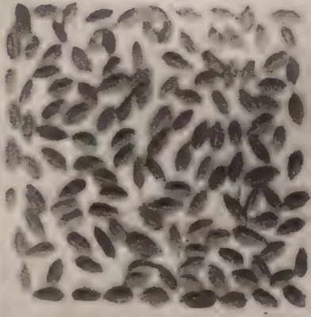
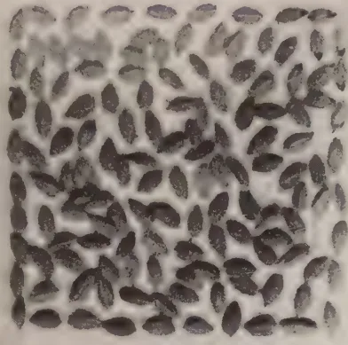
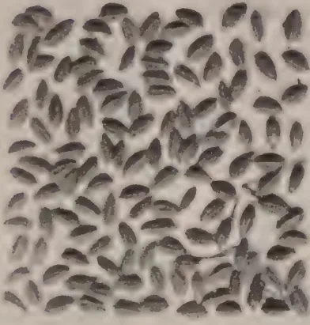
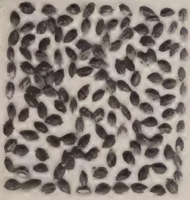
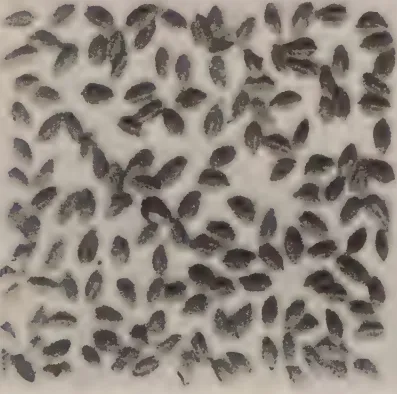
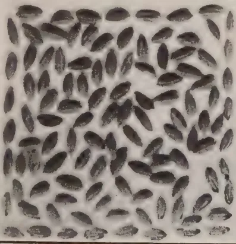
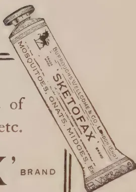

THE
TROPICAL AGRICULTURIST:
JOURNAL OF THE
CEYLON AGRICULTURAL SOCIETY.
VOL. LVI.
PERADENIYA, MARCH, 1921.
No. 3.
THE BOARD OF AGRICULTURE.
In the present number of the TROPICAL AGRICULTURIST are included the proceedings of the inaugural Meeting of the Board of Agriculture, which has been constituted as an advisory body to the Government and to the Department of Agriculture on all matters and questions concerning the agricultural industries of the colony.
Attempts have been made to make the Board as representative of agricultural interests as possible and all agricultural associations—the Planters' Association, the Low Country Products Association, the Estate Agents Association, the Agricultural Society and the various Provincial and District Food Production Committees have nominated representatives to the Board.
Agricultural Councils and Boards have been established in the United Kingdom and throughout the Empire. By this means the different Governments and their Departments of Agriculture are kept in the closest possible touch with instructed public feeling and opinion in regard to agricultural affairs.
The Ceylon Department of Agriculture will be afforded, through the Board, the opportunity of regularly receiving advice and assistance from representatives of agriculture from every part of the colony and these representatives will be able to maintain a close touch with the work of the Department of Agriculture and will ascertain how that Department is endeavouring to work for the agricultural industries and what are the difficulties that beset it.
Any Department of Agriculture, to fulfil its obligations to the agricultural interests must possess the confidence of the whole agricultural community and must be in close touch with
134[MARCH, 1921.the problems and needs of all classes of agriculturists. The representatives of the industries on the Board of Agriculture will have opportunities of expressing their views on the work of the Department and upon the needs and requirements of agriculture in general.
The Department of Agriculture in Ceylon has in the past received valued advice and assistance from the Committee of Agricultural Experiments which was originally formed as an advisory body for the Peradeniya Experiment Station. The Agricultural Society has rendered valuable assistance in matters concerning village agriculture and has through its Instructors helped to stimulate interest in the improvement of agricultural practices.
As the Department has expanded and its work become more general throughout the colony, the need for co-ordinating these agencies became necessary and the formation of the Board of Agriculture was decided upon.
The agriculturist is making increasing demands upon the technical officers of the Department, and the need of practical advice and assistance is becoming more important to the Department. No subject is so complex as that of agriculture, and its varied interests are often numerous and conflicting. The technical department requires the help and assistance of the practical man, while the agriculturist is becoming, year by year, more in need of technical assistance from the scientific specialist.
The Board will consist of three Committees—one charged with the consideration of the needs of Estate Products—those products such as tea, rubber, coconuts, cinnamon, cacao, cardamoms which form practically the whole of the exports of the colony, and another charged with the consideration of all matters connected with the cultivation, harvesting and marketing of paddy and other food crops and grains. The third Committee—the Executive—will consider the resolutions of the other Committees and advise Government with respect to all matters and questions affecting the agricultural industries and interests.
The meetings of the Estate Products Committee will be held at Peradeniya and those of the Food Products Committee in Colombo, while general meetings of the full Board will be held twice annually—in Kandy and in Colombo. It is hoped that at these meetings progressive agricultural thought will have an opportunity of expressing itself and that the public view on agricultural matters will be ascertained.
MARCH, 1921.]135The inaugural meeting of the Board of Agriculture was held at the Ferguson Hall of the Victoria Commemoration Buildings, Kandy, at 12 noon on Wednesday, the 9th February, 1921.
HIS EXCELLENCY THE GOVERNOR presided.
Others present were:—The Director of Agriculture, Sir Solomon Dias Bandaranaike, Kt., C.M.G., the Hon'ble Mr. Graeme Sinclair, the Hon'ble Dr. H. M. Fernando, the Hon'ble Mr. O. C. Tillekeratne, the Hon'ble Mr. J. H. Meedeniya, the Hon. Mr. A. Sapapathy, the Hon'ble the Government Agent, C.P., the Government Agent, N.P., the Director of Food Production, Colonel J. W. Oldfield, Lieut.-Colonel T. G. Jayawardene, Lieut.-Colonel T. Y. Wright, Lieut.-Colonel L. Bayley, Gate Mudaliyar A. E. Rajapakse, Gate Mudaliyar C. H. A. Samarakkody, Gate Mudaliyar, Tudor Rajapakse, Gate Mudaliyar L. A. Dassanaike, Mudaliyars G. A. Goonetilleke, Edmund Peiris, B. J. H. Bahar, V. M. Muttukumaru, Dr. C. A. Hewavitarne, Messrs. M. Kelway Bamber, C. Drieberg, F. Summers, G. Bryce, G. Auchinleck, G. Harbord, N. Marshall, T. Walloopillai, Geo. Brown, A. W. Beven, Graham Pandittasekera, E. W. Keith, A. S. Long Price, A. A. Wickremasinghe, C. W. Bibile, Ratemahatmaya; P. B. Nugawela, Ratemahatmaya; W. A. de Silva, R. Garnier, C. E. A. Dias, E. C. Villiers, S. Tiyagaraja and C. S. Muttutamby.
Visitors:—The Hon'ble Robert Trefusis, Dr. G. W. Sturgess, Messrs. P. B. Herat, R. H. Pereira, N. Wickremaratne, and W. Molegode.
MR. F. A. STOCKDALE, Director of Agriculture, read the following brief history of the formation of the Board of Agriculture:—
During the Dutch occupation of Ceylon, a Botanic Garden was started in Colombo, but after the British occupation this was neglected and eventually sold. In 1810, however, SIR JOSEPH BANKS, then President of the Royal Society, was instrumental in having another Botanic Garden opened under British superintendence in Colombo. Later this garden was transferred to Kalutara, and in 1821 steps were taken to transfer the Garden—this time to Peradeniya. The actual transference took place early in 1822 to the present site of the Gardens—a site which was formerly utilized in past as the fruit garden and pleasure grounds of the Sinhalese Royal dynasty.
From this beginning, the Department of Botanic Gardens was formed. Branch Gardens were opened in various parts of the Colony and work on the trial of new crops and upon the acclimatization of newly introduced exotics undertaken. In 1880-1882 the disease of coffee was investigated by MR. H. MARSHALL WARD and later the Planters' Association of Ceylon engaged Mr. CARRUTHERS to investigate canker of cacao.
136[MARCH, 1921.To the Botanic Gardens Department was added an Entomologist in 1897, a Mycologist in 1900, and a Chemist in 1900. Other branches of botanical investigation were also undertaken, particularly in the realms of economic and agricultural botany. In 1902, the Peradeniya Experiment Station was acquired and experiments in tropical agriculture begun. The Committee of Agricultural Experiments was formed at the same time to "confer and advise on the experiments in agriculture carried on by the Department at the Experiment Station." It originally consisted of eleven members. In 1904, the Agricultural Society was founded by SIR HENRY BLAKE and its object was to "encourage the advance of the agricultural community by improved methods of cultivation and by more careful selection in stock breeding. A Board of Agriculture was formed as the Executive of the Society. The formation of a Department of Agriculture was urged, but it was thought desirable to maintain the Department of Botanic Gardens and to encourage the Agricultural Society to undertake the charge of village agriculture.
1912 saw the re-constitution of the Botanic Department as a Department of Agriculture. The work and functions of the Department have considerably extended from that date and there will undoubtedly be a great extension in the future, as additional provision is made by Government for scientific research and technical education.
Early in 1919, Provincial and District Food Production Committees were formed as advisory committees in matters of Food Production to the various Government Agents and Assistant Government Agents. Of all departments of Government, the Agricultural Department should be in the closest touch with the people. Its advice is sought on the many and varied aspects of agricultural industry, and in order that this advice may be of practical value it is essential that these officers should be in intimate contact with the practical side of the business, and that those responsible for the administration of the department should be able to secure guidance, assistance and advice from a body of practical agriculturists representative of the whole industry.
The formation of a Board of Agriculture, advisory to the Department, was therefore brought up for discussion before the Committee of Agricultural Experiments, the Agricultural Society, the Planters' Association and the Low-Country Products Association. The result of these deliberations have been carefully considered by HIS EXCELLENCY THE GOVERNOR who has been pleased to appoint the following gentlemen to the Board of Agriculture:—
The Government Agent—Western Province.
The Government Agent—Southern Province.
The Government Agent—Central Province.
The Government Agent—Northern Province.
The Director of Irrigation.
THE DIRECTOR OF AGRICULTURE—Chairman.
| 1. A. J. Austin Dickson, Esq. | } Nominated by His Excellency the Governor. |
| 2. Lieut.-Col. L. Bayly | |
| 3. J. S. Patterson, Esq. | |
| 4. D. S. Cameron, Esq. | |
| 5. M. L. Wilkins, Esq. | |
| 6. Geo. Brown, Esq. | |
| 7. H. D. Garrick, Esq. | |
| 8. Sir Solomon Dias Bandaranaike | |
| 9. A. W. Beven, Esq. | |
| 10. Grahame Panditasekera, Esq. | |
| 11. The Chairman, Planters' Association. | } Nominated by the Planters' Association. |
| 12. E. W. Keith, Esq. | |
| 13. A. S. Long Price, Esq. | |
| 14. J. Graeme Sinclair, Esq. | |
| 15. R. G. Coombe, Esq. | |
| 16. R. Garnier, Esq. | |
| 17. N. G. Campbell, Esq. | |
| 18. Col. J. W. Oldfield | |
| 19. A. C. Matthew, Esq. | } Nominated by the Estate Agents' Association. |
| 20. W. Coombe, Esq. | |
| 21. H. L. De Mel, Esq., C.B.E. | |
| 22. Thomas A. de Mel, Esq. | } Nominated by the Low-Country Products Association. |
| 23. C. P. de Silva, Esq. | |
| 24. C. E. A. Dias, Esq. | |
| 25. Dr. C. A. Hewavitarne | |
| 26. Gate Mudaliyar A. E. Rajapakse | |
| 27. F. R. Senanayake, Esq. | |
| 28. N. D. S. Silva, Esq. | |
| 29. James Peiris, Esq. | } Nominated by the Agricultural Society. |
| 30. Lt.-Col. T. G. Jayawardane | |
| The Govt. Agricultural Chemist | } Department of Agriculture Members |
| The Botanist and Mycologist | |
| The Entomologist | |
| The Assistant Botanist and Mycologist | |
| The Assistant Entomologist |
THE DIRECTOR OF AGRICULTURE—Chairman
}
Nominated by the Agricultural Society.
Divisional Agricultural Officer, Central
" " " Southern
" " " Northern
}
Department of Agriculture Members.
Economic Botanist.
MARCH, 1921.]139THE PRESIDENT'S ADDRESS.HIS EXCELLENCY said he had been asked to preside at the meeting the notice of which together with the various memoranda had been circularised. They would recollect that some time ago at a meeting held in that hall he had set out what he believed to be the most desirable plan to deal with agriculture generally in the colony, and he had outlined a scheme, which had then been placed before them lately, and concerning which they had met now to consider the details. He said emphatically that there should be a Board of Agriculture in the Colony, but the Board should deal entirely with the agricultural products of the country. They would see set out before them the Committees which would be connected with the Board. As he had said on the previous occasion it seemed desirable that one Committee should deal with the major products and the other with the minor products. There should also be besides an Executive Committee or Senate to which the proposals of the Products Committees would be forwarded for serious consideration of Government. On that Committee would sit the leaders in agricultural matters in Ceylon. Upon the advise of this Committee Government would either take steps to carry out the different suggestions, or the Executive Committee would if it were necessary refer their proposals back to the Products Committee for further discussion. In his opinion the constitution of this Board of Agriculture was one of very great importance. It brought himself as Chief Executive Officer of the Colony into closer touch with agriculture. It enabled him, personally, to examine into any question which might be referred to the Executive Committee and to understand exactly the objects and the aims of the particular question—it enabled him to deal personally with agricultural matters. At the present moment if the Governor was to become personally acquainted with agricultural matters, he had either to attend the meetings of the Committee of Agricultural Experiments or the meetings of the Ceylon Agricultural Society. But unfortunately his official business prevented him, to a very large extent, from being present at the Peradeniya meetings, and likewise at the meetings of the Ceylon Agricultural Society. The question that arose at these meetings were possibly mainly in connection with the minor products and not in connection with the major products of tea, rubber, coconuts, and he could not get into touch with those members whose advise, at all times, was valuable, and on occasions extremely important. Therefore he was glad to see that after considerable delay this Board of Agriculture had at last taken shape, and they had met to consider a series of rules which would govern the procedure of the Board. In connection with its formation he should perhaps say that they had been a little previous in so far as the Ordinance that dealt generally with questions connected with the Board had not as yet received the sanction of the Legislative Council, which was not likely to meet for some months yet. But still, he believed that the Legislative Council would at once approve of the step they had taken, and though they had been previous, he felt that their haste, if he might so call it, had been justified. He thought that the constitution of the two Committees was one which appealed to all. It contained the names of those who were well known in Agricultural matters in the Colony. The Estate Products, to take it first, contained members who were nominated by the Governor, members nominated by the Planters' Association,
140[MARCH, 1921.by the Estate Agents' Association and by the Low-Country Products Association. There were also members nominated by the Agricultural Society and the members from the Department of Agriculture. In that list were names they were accustomed to hear in connection with agricultural matters, more particularly in connection with agricultural matters which apply to the major products of the country. Then as regards the Food Products Committee they would have a very useful number of members, and he was glad to see that the Agricultural Society was represented on both Committees. In some remarks he had made in connection with the Agricultural Society he had said he saw no reason why that Society should not continue—they would be an independent body. They would be able possibly through their members who had been nominated to the Board to bring up matters, which might otherwise be lost sight of—matters mainly in connection with the minor products and possibly also in connection with the major products of the Colony. He would like to refer, for a moment, to the work of the Committee of Agricultural Experiments. He had only one or two opportunities of attending its meetings, and he was struck with the very careful way in which that Committee conducted its business. Though he had no opportunity of attending those meetings oftener, he read with very great interest the reports of their meetings which were published from time to time. He understood that this Committee was to be merged—or rather the Major Products Committee was to take its place. He hoped and he believed that the inauguration of this Board of Agriculture with its two Committees to consider Agricultural questions, and its Executive Committee or Senate to which matters of serious importance would be referred, would do a great deal towards the advancement of Agriculture in the Colony. He wished the New Board a very successful and useful term of office.
The draft rules were passed with certain amendments and are as follows :—
1. The Board of Agriculture shall consist of three Committees—the Executive, the Estates Products and the Food Products Committees. These Committees may if desirable appoint Sub-Committees of members and may with the approval of the President of the Board co-opt other members to such Sub-Committees.
2. All members of the Executive Committee and ex-officio members shall be members of the Estates Products and Food Products Committees.
3. Full meetings of the Board shall be held twice annually in the months of February and August and on such other occasions as may be desired by the President. In addition to members, these meetings shall be open to all members of Planters' Associations, Estate Agents' Association, Low Country Products Association, Agricultural Societies, or Food Production Committees.
4. The Estates Products Committee shall meet at Peradeniya six times per annum on the second Thursday of the months of January, March, May, July, September and November under the Chairmanship of the Director of Agriculture.
MARCH, 1921.]1415. The Food Products Committee shall meet four times per annum at different important centres in the months of February, June, August and December under the Chairmanship of the Director of Agriculture.
6. In the absence of the Director of Agriculture at any meeting, the members of the Estates Products or Food Products Committees shall elect their own Chairman.
7. All members other than Department of Agriculture members and Chairmen of Associations nominated in their capacity of office-bearers of such Associations, shall hold office for a term of three years from the date of appointment, and may be eligible for reappointment.
8. Any member may resign his seat on the Board by letter addressed to the President and any member, who has not, on December 31st, in each year, attended during the preceding twelve months or during his tenure of office one-half of the meetings of the Committee to which he has been appointed, shall be considered to have vacated his seat unless he has been absent through ill-health or with leave.
9. Any member may be granted leave for a period not exceeding twelve months and the Governor may appoint any person to act in his stead.
10. At meetings of the Executive Committee five members shall form a quorum and at meetings of the Estates Products and Food Products Committees twelve shall form a quorum.
11. The Chairman at each meeting shall have a casting as well as an original vote.
12. Notices of meetings shall be given at least fourteen days before the date of the meeting, and notice of subjects desired by members to be placed on the agenda of such meetings shall reach the Secretaries of the Committees at least seven days before the date fixed for the meeting.
13. The Chairmen of the Estates Products and Food Products Committees shall have the right to decide as to the relevancy of the subjects desired to be discussed and shall submit such subjects to the Executive Committee for decision if he considers them irrelevant.
14. A precis of the proceedings of meetings of the Executive Committee shall be supplied to the Press for general information. Meetings of the Estates Products Committee and of the Food Products Committee shall be open to the Press.
15. A Secretary shall be appointed to each Committee, the Secretary of the Executive Committee being ipso facto Secretary to the full Board. These officers shall be responsible for the minute books in which the proceedings of the Board shall be recorded.
COLONEL T. Y. WRIGHT said : I propose a hearty vote of thanks to His Excellency the Governor for presiding here to-day at the first meeting of the Board of Agriculture. As you are aware, His Excellency has always taken the greatest interest in the agriculture of this colony, and this Board is the direct result. I should like to take this opportunity of saying a word or two about the representation of agricultural interests in the New Legislative Council. So far as we can foresee agriculture will be inadequately represented on that new Council. It seems to me that it is going to be a council of lawyers. Gentlemen, Ceylon is an agricultural colony and the Government
142[MARCH, 1921.depends more or less on agriculture. I submit, Sir, that lawyers have not sufficient practical knowledge. It is a matter for regret (I hope I may be forgiven for saying so) that the Low-country Products Association have not selected a planter to represent them. I hope you will not think that I suggest MR. DE MEL is not a proper member for the Legislative Council. I feel sure that he will be a most useful member, so far as mercantile affairs are concerned. Under the circumstances I should like the Board to ask His Excellency to nominate a member of the Board of Agriculture to one of the three nominated seats in the new Council.
The HON. DR. H. M. FERNANDO said: It gives me great pleasure to second the vote of thanks, and in doing so I may say that ever since His Excellency came to this Colony he has taken the deepest interest in the agricultural development of the Colony, and it was very fortunate that he came to us with the experience that he has had in other Colonies which depend, like Ceylon, perhaps more, on the development of agriculture for their prosperity. And with the wide outlook and varied experience he has had in these other Colonies he came to us to help the development of agriculture to its fullest extent. The accomplishment to-day of a policy which has been outlined by His Excellency is welcomed and I hope the new policy will bear in time the fullest success. It is a very heartening thing, gentlemen, that His Excellency had only the other day the opportunity of inaugurating a new era in the educational development of the country. To-day he has the privilege of inaugurating a new era, I hope, in the agricultural development of the Colony and in a very short time he will also inaugurate a new era in the political development of the country.
In returning thanks, HIS EXCELLENCY said that in reply to COL. WRIGHT'S remarks he would say that a very distinguished agriculturist would be appointed a member of the Legislative Council and that would be the Director of Agriculture (applause), a nomination very necessary under the new regulations. In his experience in other Colonies the Director of Agriculture was invariably a member of the legislature. As regards the appointment of another nominated member he said that it would be found that members of the learned profession have found favour with their constituents to the exclusion of representatives of agricultural interests. He thought that it was his duty, in such a case, as he had said more than once, to provide for interests that are not adequately represented and he would not forget the agricultural interests of the Colony. (Applause.)
The Director of Agriculture announced the arrangements that had been made for members of the Board to visit the School of Agriculture, Peradeniya, the Botanic Gardens and the Experiment Station the following morning. He stated that members would also be conducted by the scientific officers through the various offices and laboratories of the Department.
In conclusion, before the meeting adjourned, he asked members to pass a vote of thanks to the Planters' Association of Ceylon for the use of their spacious Hall. The vote of thanks was carried unanimously and the meeting adjourned sine die.
MARCH, 1921.]143(Extracts from the Annual Report of the Planters' Association of Ceylon.,)
During the year under review the policy of the Department in regard to the investigation of plant pests and diseases has been continued. Particular attention has been given to the continuation of the investigations of the Shot-hole borer pest of Tea and an Entomologist has been detailed for this work. The inspection of Tea estates and gardens in the central division for pests and diseases has been systematically carried on, and the completion of the preliminary survey of this area will shortly be accomplished. It has been found that Shot-hole borer in Tea is extremely prevalent, particularly in the smaller gardens and that this pest of Tea is spreading—especially in those areas which are not highly cultivated and manured.
The African snail has also been under further investigation during the year, and particular attention given to the predatory habits of the fire-fly larvæ.
The fungus diseases of coconuts have received attention and further detailed investigation of the diseases of this important crop will be continued. The Kurunegala district has forwarded the largest number of specimens for investigation, and in this district considerable losses of crops have resulted from the nut-fall, leaf droop and leaf-break diseases. A Mycologist will be detailed for work on these diseases and sub-inspectors are being trained preparatory to starting an organized disease survey of the coconut plantations.
The necessity for further work in the investigation of plant diseases was brought to the attention of Government by the planting community and sanction secured for the appointment of three additional Mycologists. These will be secured as early as possible, but the shortage of trained men may cause some delay.
Sanction has also been secured for building and equipping research laboratories at Peradeniya to form the nucleus of a properly staffed Research Institute. In these laboratories provision is to be made for research students from the Universities of the Empire and the University College of Colombo and for the higher training of officers required for the Department of Agriculture as it expands.
The necessity for the greater local production of food-stuffs has resulted in a considerable demand for information and for seeds from the Department of Agriculture. These requests have been met and leaflets on the cultivation of the principal food products have been prepared for distribution through the various District Planters' Associations. The pests and diseases of food crops have also received attention. Articles and leaflets have been prepared on the pests in the island and investigations made into the diseases of plantations.
The various experiments on the Experiment Stations have been continued and results published for general information as they become available. Fibres on the Anuradhapura Experiment Station are promising, while the small area of oil-palms continue to give increasing yields. The Economic Botanist has begun work on the selection and improvement of paddy varieties and experiments with tobacco have been continued at Jaffna and at Teldeniya.
144[MARCH, 1921.Detailed Reports from Mycological, Entomological, and Inspectorate divisions of the Department are appended :—
Brown Bast has been less prevalent during the year. The cause is still unknown, but it is generally considered to be a diseased physiological condition induced by tapping. It apparently occurs more frequently in the Federated Malay States and in the Dutch East Indies than it does in Ceylon and in this connection it is worthy of note that alternate day tapping has been the practice in Ceylon for a number of years, whereas in the above countries daily tapping has been the common practice. An attempt was made to obtain an accurate estimate of the prevalence of the disease in Ceylon. A schedule of queries was issued and replies were received from Rubber estates. Consideration of the data thus obtained rendered it doubtful, if the estimate would be accurate enough to be of use, and a review of the whole situation threw light on so many probable errors that it was decided to proceed no further with these figures. The morbid anatomy of Brown Bast has not as yet been fully described, but the condition will probably be found to be closely related in its inception to the alteration of latex vessel content that proceeds nodule formation.
Fomes root disease (Fomes lignosus) is the cause of numerous losses. It is difficult to eradicate as, in uprooting diseased trees, small portions of diseased root are often left in the soil. It spreads especially rapidly along drains and watercourses. The appearance of the disease and the fructification of the fungus are well-known and drastic treatment on its first appearance is essential if further losses are to be avoided. In view of the repeated warnings as to the danger of root disease where old stumps are left among Hevea, it is surprising to find that cases still occur where old stumps are left to decay in situ. It should be the first principle in the plant sanitation of estates that no old stumps should be left in the ground, nor should old logs be left among the trees.
Brown Root disease (Fomes lamaoensis) has been especially frequent. This is typically a disease connected with the presence of old jungle stumps. The fructification has not appeared so frequently this year.
Stem disease caused by Ustilina zonata has been reported periodically. This fungus is often found on old logs, where it produces its fructifications. Old logs thus act as centres of infection for adjacent healthy trees.
Decays of renewing bark have been less serious. Preventive painting with Brunolinum and other substances is undoubtedly checking this group of diseases. During the year several cases of suspected "Mouldy Rot" (Sphaeronema sp.) of the F. M. S. have been reported, but none of these have yielded anything save species of Fusarium and Cephalosporium. The "Mouldy Rot" of the F. M. S. has therefore not yet been found in Ceylon. Lately it has been recorded on one estate in Java and there is always the possibility of its appearance in Ceylon. The Java case is considered to be a case of a Sphaeronema sp. already present in Java developing a parasitic habit on Hevea.
MARCH, 1921.]145Leaf fall and Pod disease due to Phytophthora Faberi and P. Meadii have shown a decline, which may be attributed to the unusually dry weather in September and October. The pods were able to ripen and burst and the trees were to a great extent free of fruit when the heavy monsoon rains set in late in October. As the two fungi attack the pods first, and later spread to the leaf petioles causing leaf fall, the absence of the pods as starting points resulted in greatly lessened leaf fall.
Two cases have been recorded of Fomes lucidus fructifications occurring on Hevea apparently saprophytically, i.e. on dead wood. This fungus is the cause of a root disease in Coconut, Flamboyante (Poinciana regia) and mango, and is a wound parasite in some cases. While it may only be a saprophyte on Hevea, its occurrence if noted frequently on Hevea would be suspicious.
Lightning scars on the upper portions of Hevea have again been recorded. Lightning may be a more common cause of damage than is generally recognised.
A black sooty fungus growing over the leaves and associated with scale insects has been somewhat common. This fungus is a Meliola sp. and grows on the secretions of the scale insects. It is not parasitic on the leaf. Usually the scale insects are parasitised by entomogenous fungi; which serve to limit the extent of the scale insect attack. The damage done to the tree is insignificant, and the danger of unlimited increase of the scale insects is small as they are effectively controlled by parasitic fungi.
Red Rust (Cephaleuros sp.) has again been prevalent in the Ratnapura District and the Southern Province, and has been found on one estate in the Kalutara District. In this latter case the bushes were in a weak condition. The evidence from all the cases supports the view that this is a disease of weak bushes. In one particular case the attack was connected with shallow soil; the bushes sent in for examination were young and had reached the limit of root development permitted by the shallow soil; further vigorous growth was then impossible and in their weakly condition the bushes succumbed to attack. Unfavourable growth conditions may be of the soil or of the climate; their effect on the bush is to lessen its vitality, in which condition the bush is more liable to fungus attack.
Poria Hypolataritia has occurred up-country among old tea and the serious nature of this root disease has again been demonstrated. It spreads freely through the soil and is extremely difficult to eradicate. Measures for eradication must be applied drastically on its first appearance if serious loss of bushes is to be avoided.
A new branch canker caused by Helminthosporium gigasporum was recorded. The bark generally on the upper side of the branch was killed back from the pruning cut. In conjunction with this a canker closely resembling that caused by Leptosphaeria was found, but the fungus itself was not obtained. The damage done in one case was severe. As a measure of control painting with various fungicidal fluids is in course of being tried. A suspected case of stem canker caused by Nectria sp. was recorded.
146[MARCH, 1921.Two ascomycetous fungi, as yet unidentified, were recorded as causing stem galls of Tea seed bearers. In the first the fungus penetrates the cortex and ruptures the tissue along the line of the cork cambium. It does not appear to penetrate more deeply into the cortex, but its presence in the outer layers stimulates the branch to excessive growth, and a large woody swelling forms on the stem covered by a thick, much wrinkled and warted layer of abnormal cortex containing the fructifications of the fungus. The second fungus also penetrates only the outer layers of the cortex, but its effect is confined to fissuring of the bark and slight woody swelling on the stem. Both fungi appear to be very susceptible to lime, and should be easily kept in check by the liming of stems of seed bearers undertaken to keep down growth of lichens.
The unfavourable market prices of Tea, especially during the latter half of the year, have resulted in a general cutting down of expenditure on estates. Manuring and general cultural operations have been restricted, and this following on the war period of manure shortage will result in lessened vigour of growth. It is therefore to be expected that in the coming year the incidence of disease will be heavier in the case of known diseases, and further that fungi hitherto not parasitic on Tea may, under the present conditions, be able to attack Tea.
Phytophthora nut-fall occurred to much the same extent as last year. The question of preventive treatment by spraying with Bordeaux mixture has been taken up. It is not improbable that a saving of nuts will be thus effected which will more than counter-balance the expense of spraying.
Phytophthora leaf droop has been less frequently reported.
Investigations as to the cause of Leaf break indicate that Diplodia is present at the point of fracture, and that weakly growing coconuts are subject to attack.
The "tapering of the crown" disease has been partially investigated. Field observations showed that the crown is not diseased and that many dead roots occur. Amongst these vigorously growing new roots are often to be seen. No evidence of Fomes lucidus was obtained nor was any parasitic fungus hatched out in material under observation in the laboratory. The symptoms tend to indicate that this condition is due to a root disease.
Poria hypobrunnea has again been recorded on dadaps, and from the severe nature of the attack observed, it is evident that it is a serious root disease.
No cases have been reported of Cercospora theæ on Acacia decurrens.
Tephrosia candida suffered severely from root disease caused by Poria hypobrunnea and stem disease caused by Irpea subvinosus.
MARCH, 1921.]147REPORT OF ENTOMOLOGICAL DIVISION ON PLANT PESTS.INSECT PESTS, 1920.Tea.Shot-hole borer (Xyleborus fornicatus) has been the subject of continuous investigation by the Assistant Entomologist throughout the year and a brief report of this work is as follows:—
"The work with Shot-hole borer of Tea has been chiefly confined to further trials with SPEYER'S paint mixture and manurial experiments on a large scale. Painting cannot be carried out at less than Rs. 30 per acre and the benefits derived from this form of treatment were not as great as was anticipated, apart from the high cost and damage done to the bushes by the application of paint.
The manurial experiments are in progress at Sarnia Estate, Badulla, and have been commenced in order to test the effects of Nitrogen, Phosphoric Acid and Potash upon the incidence of Shot-hole borer and also upon the healing of gallery-entrances.
The process of gallery-entrance healing, and the factors which promote it, have received considerable attention, as the matter is of interest and importance.
Experiments in connection with the burial of prunings with various manures and chemicals are to be commenced shortly and continued trials have been made in connection with the emergence of beetles from prunings when buried and mulched.
Further trials with "control pruning" have been made, but unfortunately with no success owing to the considerable and unavoidable mutilation of the bushes.
One experiment with castor-oil plant as a trap tree is in progress at an estate near Kandy and another one on a smaller scale is to be commenced near Badulla in the near future."
Tea tortrix (Homona coffearia) continues to be a serious pest of Tea in some districts. Experiments are being made by the Plant Pest Inspector with powdered lime against tortrix, but no definite statement as to the results obtained can be given at present.
Apart from Shot-hole borer and Tea tortrix the outstanding Tea pests of the year have been leaf-eating caterpillars and Tea mites. Both of these groups of pests have been responsible for a considerable amount of damage over large areas during the dry weather which prevailed almost without a break from May to October. Short notes on the more important of these pests are given below.
The "fringed nettle grub" (Nalada nararia) has been much in evidence during the year, especially in the Uva Tea districts, and outbreaks of this pest were usually accompanied by attacks of other species of nettle grubs in smaller number. In some instances the outbreaks were checked in the early stages by the collection of the caterpillars and small brown egg-shaped cocoons, but where the pest was allowed to run on through two or three broods it more or less completely defoliated areas of Tea varying from ten to upwards of a hundred acres before its natural enemies regained control.
148[MARCH, 1921.The "red slug" (Heterusia cingala) has also done some damage during 1920. The conspicuous reddish caterpillars should be collected as soon as they are first noticed. They form their cocoons within folded leaves, especially those lying on the ground, and the gathering and burning of all fallen leaves is an important method of checking this pest.
The "lobster caterpillar" (Stauropus altornus) occasionally becomes numerous enough to be a pest and an outbreak of this curious-looking creature was reported during the dry season.
Small local outbreaks of bag-worms and faggot-worms were reported during the year and the specimens received were mostly Psyche vitrea and Clania variegata. These insects usually occur only on a few bushes and do not spread rapidly. They can easily be controlled by hand-picking and destroying the cases.
All attacks of leaf-eating caterpillars of Tea should be checked promptly in their early stages, as by so doing not only is considerable damage to the Tea bushes avoided, but the cost is trifling compared with the expense incurred in trying to stem the advance of an extensive outbreak. This is a point worthy of special consideration at the present time.
A prompt application of the lead chromate rosin compound spray recommended in Bulletin No. 46 of this Department for use against the Tea tortrix would be effective in wiping out an attack of any of the above mentioned caterpillar pests.
Tea mites have been very prevalent in some districts during the dry weather and large areas of Tea were affected on some estates. The use of a lime and sulphur mixture was recommended to be applied either as a dust or in the form of a liquid spray with water. The shortage of good manures on many estates during the last few years coupled with over-plucking has resulted in a gradual weakening of large areas of Tea, especially those growing under less favourable conditions. Such bushes have been among the first to feel the effects of the prolonged drought which visited some districts, and bushes in this weakened condition suffered heavily from the attacks of mites. A return to normal methods of plucking in conjunction with good cultivation and manuring is indicated as a prevention against serious mite attacks in the future. Specimens of Tea mites received during the year were mainly the "red spider" (Tetranychus bioculatus), the purple mite (Phytoptus carinalis), and the yellow mite (Tarsonymus translucens). Other Tea Pests.—The scale insects commonly known as "brown bug" (Saissetia hemisphaerica) and "green bug" (Coccus viridis) have been prevalent on some estates during the year. These insects are usually accompanied by a sooty fungus (Meliola sp.), which is not a true parasitic fungus, but grows superficially on the leaf surface, developing in the sweetish secretions given off by the scales. These scales are usually more prevalent in dry weather which is unfavourable for the development of the parasitic fungi which normally control them during the monsoons. Remedial measures include lopping the twigs and leaves and burning these immediately, and application of manure. Heavily infested areas should be pruned and the prunings burnt. The frames should then be sprayed with a soap solution, at the rate of 1 lb. good bar soap to 1 gallon of water. This solution can be best applied by means of a Knapsack sprayer fitted with a nozzle giving a fine misty spray.
MARCH, 1921.]149Cockchafer grubs have been prevalent on some up-country estates especially where Tea clearings have been planted up in patna soils, which usually swarm with these grubs.
A systematic collection of eggs and grubs from the soil, and of the beetles from acacia and grevillea plants serves to reduce the infestation. An application of "Vaporite" to the soil is useful. The common species is the large cockchafer (Lepidiota pinguis), while a smaller cockchafer (Anomala superflua) also occurred.
Termites or white ants (mainly Calotermes militaris) are prevalent on many Tea estates and are responsible for more damage to the frames of Tea bushes than is generally realized. As pointed out in the last Planters' Association insect notes the main injury is done within the stems and branches which are sometimes completely hollowed out before the injury is detected.
Periodic inspection followed by an application of surgical methods are recommended. Such methods include the removal of diebacks, the trimming of broken branches, and the application of tar to all cut ends and termite borings. Much of this work can be done at pruning time when the extent of the injury is best detected.
The leaves and twigs of Hevea trees have been subject to the attacks of scale insects during the year, the infestations occurring on a few scattered trees or on trees within a small definite area. The species usually concerned were Saissetia hemisphaerica and S. nigra. The sooty fungus (Meliola) usually covered the affected leaves and twigs, giving the trees an unsightly appearance. In most cases, however, the attacks were being effectively checked by parasitic fungi (mainly Aschersonia sp.). Trees affected by the scale insects should receive special attention in the way of cultivation and manuring.
The long-horned beetle Balocera rubus was occasionally reported. A reference was made to this pest in the last report.
Cockchafer grubs were reported from Rubber nurseries.
The black-headed caterpillar (Nephantis serinopa) was prevalent in the Eastern Province during the early part of the year. Recommendations for control were given in the 1919 report.
During the year the staff of the Inspectorate consisted of one Inspector, two trained Sub-Inspectors and one Sub-Inspector, under training.
The following figures show the inspections made, areas scheduled as infested with Shot-hole borer, and the movement of Tea plants by sales under permits.
| Inspections | Number of Estates scheduled for S. H. B. |
Number of permits issued |
Number of plants sold |
|
|---|---|---|---|---|
| Estates | 172 | 755 | 111 | 1,098,150 |
| Gardens | 2,547 | 2,362 | 21 | 187,000 |
| Total | 2,719 | 3,117 | 132 | 1,285,150 |
The present objects of the Plant Pest Inspectorate are to make a complete insect survey of the Tea growing area in order to ascertain the distribution of Shot-hole borer, the presence of other proclaimed pests and diseases, and insects known to be serious pests during certain seasons and years, and at the same time to impress upon agriculturists the losses that are, or may be caused, by such pests; to bring all agriculturists into closer touch with the Research Officers of the Department; to advocate and encourage remedial measures for the control of all pests; and to acquire information for the improvement of the Plant Pests and Disease Regulations.
Among insects found upon Tea during the year are the following :—
Shot-hole borer (Xyleborus fornicatus Eich.) spreading throughout the tea growing area. Great majority of small gardens are likely to be infested. A large proportion of these gardens are badly cultivated and consequently Shot-hole borer is prevalent. These badly cultivated areas serve as centres of dissemination of the pest. The use of seeds from these badly cultivated and pest infested bushes for the purpose of raising plants for sale is common, but such plants naturally give rise to bushes of poor vitality.
Tea Tortrix (Homona coffearia, niel) not present in the early part of the year to any great extent; due to recommended measures being adopted. Now making its appearance in areas unprotected by flight breaks. Insects can be controlled by application of lime, and a good system of flight breaks throughout estate. This serious pest is now within our control.
The Leaf-miner (Oscinis theae, Bigot) present throughout the year in sufficient quantities to make bushes ugly. Present in Uva in quantity during drought. Restricting itself to leaves below the fish leaf; is of little consequence at present.
Tea Mosquito (Helopellis antonii, sign) one case noted; immediate measures taken.
Tea aphid (Ceylonia theacola, Buch.) present generally on tea just out from pruning. Effects remedied by application of manures.
| Green Bug (Lecanium viride Gr.) | } | Noted in |
| Brown Bug ( do hemisphericum, niel) | ||
| Black Bug ( do nigrum, Targ.) |
Considerable extent in Uva Province during drought. Certain estates of Central Province possess insects to a dangerous degree. Insects not spreading into other localities.
White Ants (Collocaltermes militaris) to a very considerable extent in one estate at elevation of 4,400. Several records at lower elevation.
Red Borer (Zeuzera coffeae, niel).—One or two cases recorded; no perceptible distribution recorded.
Nettle Grubs (Thosea spp.) General. No "plague" recorded.
Bag-worms (Physche spp.) One instance of numbers. This was easily copied with; the attack exterminated.
Faggot-worms (Clania spp.) Generally localized. Not common.
Leaf Roller (Gracilaria theivora Wesm.) General to a moderate degree, considerably less than in 1919.
Red Spider (Tetranychus bioculatus). In considerable quantities during drought especially in Uva, often confused with and mistaken for red rust (Cephaluros mycoidea).
MARCH, 1921.]151Minutes of Proceedings of Annual General Meeting of the Ceylon Agricultural Society, held at Colombo on 2nd February, 1921.
The annual general meeting of the Ceylon Agricultural Society for the year 1920 was held at noon on Wednesday the 2nd February, 1921, in the Council Chamber, Colombo. In the absence of the President H. E. the Governor, the Director of Agriculture presided. There were also present : The Hon. Sir S. C. Obeyesekere, Sir Ponnambalam Arunachalam, Hon. Mr. O. C. Tillekeratne, Hon. Dr. H. M. Fernando, Hon. Meedeniya Adigar, Dr. C. A. Hewavitarna, Lieut.-Col. T. G. Jayawardene, Gate Mudaliyars Tudor Rajapakse and J. A. Weerasiuha, Ratemahatmayas H. W. Boyagoda and P. B. Nugewela, Messrs. G. W. Sturgess, James Peiries, A. W. Beven, Fred. L. Daniel, J. S. de Silva and M. Kelway Bamber (Secretary). Telegrams expressing regret at their absence were received from Sir Solomon Dias Bandaranaike, Hon. Mr. Sapapathy and Mudaliyar A. E. Rajapakse.
Minutes of Board Meeting held on 1st March, 1920, were read and confirmed.
The Secretary read the Annual Report.
The CHAIRMAN in his opening address explained that the reference to meeting of October 29th should be to September 29th when proposals re the New Board of Agriculture were adopted and that the change of rules of the Society were adopted at the meeting of October 29th. He stated that no meetings had been held since March 1920 as every effort was directed towards increasing the production of food crops of the colony. Shortly after the decision was arrived at to form a new Board of Agriculture and readjust the relationship between the Society and the Department of Agriculture, he went home on leave and it was decided that the matter had better stand over until his return. Immediately he did return definite proposals were submitted to Government involving the ultimate taking over of the Agricultural Instructors by the Department of Agriculture. The Scheme included the revision of salaries and other departmental proposals, which had received provisional sanction and were at the moment under reference to the Secretary of State. It would be possible under the proposed scheme for officers entering the lowest grade of the Department to work right through to the highest grade and even on to the superior staff if qualified.
SIR P. ARUNACHALAM expressed surprise at the delay in holding meetings and enquired why the accounts were not audited.
DR. FERNANDO enquired what the position of the Society would be in view of the New Board of Agriculture. Many were of opinion that the Society should exist as an independent body.
152[MARCH, 1921.MR. TILLEKERATNE regretted there should be arrears in subscription and expressed pleasure that headmen's co-operation with instructors was duly acknowledged. LIEUT.-COL. JAYAWARDENE thought no profit should be made on seeds supplied.
The Chairman offered explanations on the points raised. Accounts would be duly audited and brought up at next meeting. He welcomed the question raised by DR. FERNANDO and proposed a select Sub-Committee should go into the matter fully. Arrears of subscriptions were due partly to trade depression and could ultimately be recovered. No profits were made on seeds issued which were given at cost price. The difference seen in cost and recoveries was money due to the Food Production Department.
The report was adopted on the motion of DR. FERNANDO seconded by MR. BEVEN.
After explanatory remarks made by the Chairman and some observations by SIR P. ARUNACHALAM, the Estimates for 1921 were adopted.
Nominations for the new Board of Agriculture were made as follows :—
Estates Products Committee.—Mr. Jas. Peiris and Lt.-Col. Jayawardene
Food Products Committee.—Hon. Meedeniya Adigar, Hon. Dr. Fernando, Mudaliyar Tudor Rajapakse, Messrs. C. Drieberg and A. W. Beven.
The Chairman announced his intention of proposing to Government that DR. FERNANDO be appointed a member of the Executive Committee of the new Board of Agriculture.
The Executive Committee of the Agricultural Society in terms of the new rules of the Society as an independent body was then elected as follows :—
President :—H. E. the Governor.
Vice-Presidents :—Sir S. C. Obeyesekere and Sir P. Arunachalam.
Committee.—The Director of Agriculture, Sir Solomon Dias Bandaranaike, Hon. Dr. Fernando, Hon. Mr. Balasingham, Hon. Mr. O. C. Tillekeratne, Hon. Meedeniya Adigar, Dr. C. A. Hewavitarna, Lt.-Col. T. G. Jayawardene, H. W. Boyagoda Ratemahatmaya; Mudaliyars Tudor Rajapakse, A. E. Rajapakse, J. A. Weerasinha, V. M. Muttukumaru and C. H. A. Samarakody, Messrs. W. A. de Silva, Jas. Peiries, C. Drieberg, A. W. Beven, L. W. A. de Soysa, H. L. De Mel, F. L. Daniel, A. W. Winter, G. W. Sturgess, Graham Panditasekera and M. Kelway Bamber (Secretary).
At the suggestion of the Chairman a select Sub-Committee was appointed consisting of the Director of Agriculture, Hon. Dr. Fernando, Sir P. Arunachalam, Dr. Hewavitarna, Lt.-Col. Jayawardene, Messrs. Jas. Peiries, C. Drieberg, A. W. Beven, M. Kelway Bamber (Secretary). This Committee to meet at 11-30 a.m. on Monday, March 7th, 1921, in the Council Chamber, to consider the future relationship between the new Board of Agriculture and the newly constituted Society, details as to its functions and what adjustments may seem necessary.
This concluded the business of the meeting which terminated with a vote of thanks to the Chair proposed by SIR P. ARUNACHALAM and seconded by MR. JAS. PEIRIES.
MARCH, 1921.]153Meetings.—The last annual Meeting was held on the 29th September, 1919, with his Excellency the President in the chair. Since then two meetings were held at the Council Chamber, Colombo: one Special General Meeting on 29th October, 1919,* when alterations to the Constitution and Rules of the Society and detailed proposals for the formation of new Board of Agriculture were adopted. The other meeting held on 1st March, 1920, was the first quarterly meeting for the year; but no subsequent meetings were held in 1920 in view of the resolutions adopted at the previous meeting and pending the reorganization and amalgamation of the agricultural services in terms of those resolutions which had to await the formal sanction of Government. This sanction has now been received and the Director of Agriculture will submit to the meeting the constitution of the new Board of Agriculture. The Society will have to nominate 7 Members—2 to serve on the Estate Products Committee and 5 on the Food Products Committee of the new Board of Agriculture.
Membership.—There are in the list 840 local and 675 foreign members, making a total of 1515. The members who joined the Society during the period under review were the following:—Clark, Young & Co., J. Shaw Hellier, Japan; R. Gregor, The Goodyear Rubber Tire Co., Sumatra; F. H. Griffith, F. A. E. Price, J. W. Alahakoon, E. W. P. Pritchard, R. Neville Rolfe, Y. L. Stegg, Eucador; C. Arumugam, D. Finch Noyes, W. L. Symons, J. R. Elton Bett, Burma; M. N. Burder, M. M. H. Cassim, C. J. Varghose, India; H. B. Walker, Cebu; J. H. Underwood, U.S.A.; J. H. Jolliffe, P. S. Swaminathan, Madras; Chas. B. Collinson, Lambert P. Seneviratne, E. C. Sylvester, S. India; H. E. Candy, F. A. Burke, the Superintendent, Balangoda Group, W. E. Bayley, G. B. Foote, P. W. F. de Livera, Batam Estate (Furakawa & Co.), Singapore; President, Pole Coconut Ptn., Cebu; S. Christson, Bengal; C. E. Hart, B. S. I.; W. H. Biddle, W. Ranfuran, India; Hamdi Bey Babu, Mesopotamia; the Principal Governor, Cotabato; C. C. Herbert, England; Head Master, Heneratgoda School; A. M. Brodziak, Ltd., Fiji; Edmund Peris, Mudaliyar; Bootle L. Jardine Australia, S. Serikawa, Singapore; E. Murakami, Singapore; U. Kumagai, Singapore; S. Kosaka, Singapore; Thomson Bros. & Birch, Ltd., Brisbane; K. S. Gopalachari, Dehra Dun; K. Ramalingam Aiyar, Tinnevelly District; Gilbert Fenning, J. A. Connor, Rangoon; Crisp & Co., Rangoon; George Bridges Stevens, George H. Murray, Papua; Esmailjee Jivanjee & Co., Mombasa; H. Don, Carolis & Sons, Walter G. Poole, Uganda; Harrisons & Crosfield, Ltd., Mokhtar El Gammel, Egypt; A. M. Paine, Nolan Nylon, C. W. Wijesekera, Francisco A. Osario, P. I.; C. M. Thomas, S. India; J. W. Mackay, Calcutta; S. Kyojoh, Singapore; J. Shirley, Dr. Buenaventura Rueda, Cuba; Major E. Jecks, West Africa; E. B. Edwards, Transvaal; C. Batuwantudawe, John Still, H. B. Wade, the Secretary, Board of Agriculture, Rogwood, Bangalore; D. T. Perera, Cuyamal Fruit Co, New Orleans; R. A. Din, Singapore; J. H. Lodewyke, J. J. Wilson, Professor in Charge, Biological Library, Calcutta; D. S. Senanayake; H. H. Hiscocks, Stanley Redlich; The Superintendent, Wellimaluwa Estate, Ratnapura; Office Nationale, Paris, F. France; Arthur M. Hurst; The Chandpore Tea Co., Ltd., Assam; H. W. Hoyles, B. N. Guinea; Yellowe Venkatt, S. Canada; The Superintendent, Segersta Estate, Chilaw; The Superintendent, Hatton Estate, Hatton; The Superintendent, Milleniya Estate, Bandaragama; Reuben Gunasekera, John Clark, R. W. Vaughan, D. S. Gunasekera, L. N. de Silva, Wm. Strettell-Miller, J. B. de Silva, K. Spencer, N. D. Lewis Perera, E. W. Bedford, Harrison & Eastern Export Co., P. Eardley Wilmot, H. F. C. Phillips.
* Correction.—Proposals re New Board of Agriculture were adopted at meeting of September 29th; change of Rules was adopted at meeting of October 29th.
154[MARCH, 1921.Staff.—Mr. J. S. de Silva acted as Secretary from 22nd November, 1919, to 20th January, 1920, and again during the period 15th May to July 21st. Mr. A. Madanayake, Agricultural Instructor, Matale, was appointed an Inspector of School Gardens on 15th October, 1920; Mr. M. Amarasinghe, Agricultural Instructor, Kalutara, was appointed an Inspector of Co-operative Credit Societies on 1st November, 1920. Mr. T. B. Beddewela ceased to be Agricultural Instructor in October, 1920.
The following is the list of Instructors :—
| W. Molegode, Senior A.I., Kandy | H. C. Peiris, Weligama |
| K. C. Pillai, Jaffna | J. A. Rambukpota, Badulla |
| L. A. D. Silva, Ratnapura | D. T. J. Weerasuriya, Panadura |
| M. J. A. Karunanayake, Matale | Geo. Seneviratne, Galle |
| J. R. Nugawela, Matale | W. F. Seneviratne, Bandaragama |
| V. Ramanathan, Mannar | T. Chas. de Sylva, Naula |
| P. B. Kapuwatte, Ratnapura | M. B. Boangè, Wahacotte |
| A. V. Chelvanayagam, Trincomalie | J. C. Abayawardena, Dambulla |
| C. P. Crispyn, Kegalle | R. S. Pelpola, Gampola |
| A. B. Attygalle, Veyangoda | J. D. Nicholas, Balangoda |
| V. G. Perera, Paldeniya | D. D. Banda, Mawanella |
| A. C. W. Jayawardena, Kurunegala | P. C. Rodrigo, Hettimulla |
| Walter Perera, Pallegama | K. A. J. Perera, Ruwanwella |
| B. G. Buultjens, Matale | H. S. Perera, Helamada |
| C. W. Dangamuwa, Maswela | Austin Abeysinghe, Ukuwela |
| Geo. Madugalle, Godakawela | D. B. Hindagala, Peradeniya |
| N. Thambiah, Batticaloa | P. A. Gooneratne, Dandagamuwa |
| M. B. Wettewe, Halgranoya |
Mr. W. A. W. Gunawardena was confirmed in his appointment as Clerk to the editor of the TROPICAL AGRICULTURIST. Mr. K. B. Halangoda, Junior Assistant to the Chief Clerk, succeeded him as Senior Assistant Clerk.
The following is a statement of work done in the office :—
| Letters inward | ... | ... | 9,077 |
| Applications for seeds | ... | ... | 961 |
| Letters outward | ... | ... | 7,390 |
| Endorsements | ... | ... | 1,663 |
| Receipts and acknowledgments | ... | ... | 2,586 |
| Reminders re Subscription | ... | ... | 2,095 |
| English Magazines despatched | ... | ... | 25,755 |
| Sinhalese " " | ... | ... | 34,000 |
| Tamil " " | ... | ... | 2,550 |
The Society's publications THE TROPICAL AGRICULTURIST, GOVIKAM SANGARAWA and the KAMAT THOLIL VELAKKAM were regularly issued during the year. The number of copies printed were :—
| Tropical Agriculturist | ... | ... | 27,200 |
| Govikam Sangarawa | ... | ... | 34,850 |
| Kamat Tholil Vellakkam | ... | ... | 3,400 |
The question of re-publishing the Year Book is under consideration.
MARCH, 1921.]155DEMONSTRATION GARDENS.The following are the gardens in charge of Agricultural Instructors. These are partly or wholly financed by the Society :—
The Kegalla Park Garden was given up as the land was found unsuitable. Chena Rotation Experiments have been started at Mediwaka, in Uda Dumbara ; Maningamuwa and Rattota in Matale ; Kunniya in Trincomalie and Kumbalgamuwa, Pediapellella and Dipegoda in Nuwara Eliya.
The work done in these gardens is of a demonstrative character, through them new crops have been introduced into the respective localities and they have also acted as sources of supplying seeds, cuttings, etc.
PADDY AND INCREASED CULTIVATION OF FOOD CROPS.Increased cultivation of all food crops and the improvement of paddy cultivation engaged special attention of the Society during the year. Not only had it to meet the large demand for seeds and cuttings, but the staff of Agricultural Instructors devoted almost their entire time to help in increasing the food supply of the Colony. A series of experiments of manuring paddy fields for Yala were conducted in some districts and the results, though not satisfactory in all cases, tend to show that the yields of paddy areas in the Island might be considerably increased by repeated application of manures. A report of the Yala Paddy Manuring Experiments to date is being published in the TROPICAL AGRICULTURIST.
A very appreciable amount of other food crops such as Cassava, Maize, Sweet Potatoes, Yams, etc., were raised throughout the Island. The reports of Agricultural Instructors all show that the main work done during the year was to concentrate their attention in assisting the village population to raise more food crops, and effect improvement in existing methods of paddy cultivation with the object of increasing the yield. The following are extracts taken from some of the reports furnished by the Instructors :—
MR. W. MOLEGODE, S.A.I., Katugastota :—“The chief work done during the year was in connection with the cultivation of paddy and other food crops. Special efforts were made to encourage the use of manures and the results achieved are to be seen in the large number of cultivators who have manured their fields this Maha season. The use of green manures and of farm yard manure and ash have very appreciably extended.
“During last Yala, cultivators were encouraged to bring the largest extent on record under cultivation with the result that the output of paddy was very appreciably increased. During this season attention was devoted to experiments with artificial manures at seven centres. It is too early to pronounce any decided opinion on the experiments as conclusive results will only be available at the forthcoming Maha crop. During the Maha now on, an important series of experiments with manure supplied by Government is being conducted.
156[MARCH, 1921."Transplanting of paddy was closely supervised at various centres with the object of inducing cultivators to use less seedlings and plant at regular distances. Some years ago 2 bushels were used to raise seedlings to transplant an acre. This quantity is gradually being reduced and many cultivators now use only half this quantity.
"Some attention was given to selection of seed. Cultivators are beginning to understand the advantages of this.
"The cultivation of Cassava, Yams, Sweet Potatoes, Maize, etc., was throughout encouraged, with the result that in many localities the production is greater than the demand.
"Meetings of headmen and cultivators were arranged and Agricultural subjects were discussed. Five hundred headmen and cultivators of Harispattu and Pata Dumbara were conducted round the Gannoruwa Experiment Station and the Royal Botanic Gardens in September and October."
MR. K. C. PILLAI, A.I., Jaffna :—"The main work consisted of visiting gardens and fields throughout the district and imparting instruction to cultivators on the importance of green manuring paddy crops, collection of manures, rotation of crops, cultivation of sorghum as grain and fodder crops, extension of paddy and garden crops by sinking wells and introducing Mhote lifts, cultivation of special crops (garlic, groundnut, sugar-cane, curry-stuffs) and on the advantages of using harrows and drills in the paddy cultivation, and also on the improvement of cattle."
MR. L. A. D. SILVA, A.I. Ratnapura :—"During the year under review agriculture in this district has made such considerable progress that there has been a very large increase in the output of all Food Products—Paddy, Kurakkan, Amu, Meneri, Tana, Green Peas, Cassava, Sweet Potatoes, and numerous varieties of vegetables. In the course of the last Maha cultivation a series of experiments have been conducted with different manures, transplanting and weeding, and I have been able to arouse the interest of the cultivators in noting the success of these experiments. There is every reason to believe that most cultivators will adopt the improved methods of paddy cultivation."
MR. M. J. A. KURUNANAYAKE, A.I., Matara :—"During the year under review my whole attention was devoted to the increase of food-stuffs in general and the improvement of paddy cultivation in particular. Lectures were given on manuring, transplanting, etc., and at the same time demonstration plots, organised in every headman's division in the Pattu. The results were encouraging, mainly due to the assistance and co-operation of the Mudaliyar. During the Yala of this year transplanting was carried out at 56 centres and during the present Maha at 88 centres compared with 48 and 70 respectively during the previous year. The chief difficulty experienced was the inability to convince the villagers by talking to them, and the absence of demonstration plots was keenly felt.
"Artificial manure is being tried at Thihagoda in a 4-acre block where 3 mixtures have been applied, viz., (1) Ephos Phosphate and Green leaf, (2) Ephos Phosphate, Nitrolim and Fish Guano, (3) Bone Meal and Animal Meal, (4) Control."
MARCH, 1921.]157"Cotton cultivation has been revived and there is one plot of 4 acres near Hambantota."
MR. C. P. CRISPEYN, Kegalle, reports :—
"Transplanting of paddy has been generally adopted by villagers on their own initiative practically all over the district as a result of the demonstration plots started in several centres. Paddy manuring is being gradually followed, though not on the same scale as transplanting. Goiya plough is now in use in many places after demonstrations given in the district.
Paddy Cultivation by School Children.—Paddy fields have been attached to all the schools in the district (where available in close proximity) and are being worked by the children who do the work with pleasure and very good results are to be expected by this in the future.
Chena Cultivation.—Several Chenas have been cultivated in the district, practically every bit of land being cultivated and about 40 acres of Crown Forest re-leased by the Crown for a pasture land in the town was again leased for a period of 3 years to villagers for chena cultivation on my suggestion to the then A.G.A. MR. BROWNING; the pasture land scheme was held back until the end of that time and now every inch of it is under cultivation and will be so for 3 years.
Asweddumising of land for Paddy.—About two or three hundred acres of land are being asweddumised in the district, of which major portion is being done by BOYAGODA R.M., some of which have been visited by me and suggestions given.
Sunday Fairs.—Fairs have been established in different centres of which the best and most prosperous is the one started in Kegalle.
Village Improvement.—I am trying to improve the villages of Yatewella and Magola from an agricultural point of view as they are very backward villages.
Food Production Committee.—A Committee was started in this District early this year on my suggestion to the then A.G.A. MR. BROWNING.
Difficulties.—There are several Irrigation works being held back for want of assistance from that Department. I have seen the A. G. A. several times re this and I now understand that an Irrigation Officer will be coming round to inspect these works and I too shall go round with him.
Headmen.—I receive a good deal of co-operation and assistance at the hands of Ratemahatmayas Dedigama and Boyagoda.
Silting.—A great deal of this occurs in the district and the compensation when received is not spent in restoring the fields by the villagers. I have made some suggestions re this and the A. G. A. has promised to carry them out when possible."
MR. J. R. NUGAWELA, A.I. Matale:—"During 1920, my time was chiefly engaged in advising and giving instructions on paddy cultivation and increased production of food-stuffs, and it is pleasing to note that there is a great increase in paddy cultivation, nearly every available field being cultivated. The increase in other food-stuffs is also very encouraging. Transplanting is known in the major part of the province. Ploughing is very backward. Green manuring, deeper ploughing and transplanting should be more encouraged."
158[MARCH, 1921.MR. B. G. BUULTJENS, A. A. I. Matara:—"There has been an increase in vegetable cultivation. Instructions on cultivation and treatment of crops have proved effective in some areas such as at Weragampitiya, Lokumulla, Kekanadura. Several demonstration plots were opened out with the idea of introducing improved methods of cultivation; few of these proved successful and the rest was unsuccessful owing to slackness of cultivation and other drawbacks."
MR. J. A. RAMBUKPOTA, A. A. I., Badulla:—"Instructions with regard to manuring, specially green manure, transplanting and seed selection, the urgent necessity of producing more food; of planting cassava, sweet potatoes, yams and curry stuffs, etc., in their gardens were urged. Almost all the Headmen undertook to effect improvements in their respective villages. The penning of cattle on fields during the off-season, and the tethering of cattle at night for the purpose of collecting manure were also encouraged. In almost every instance the yield has increased by about one-fourth. The application of the manure is gradually proceeding in the villages now. Cattle manure is more largely used than it was done before. MUHANDIRAM KOTALAWELA'S experiment with Murungan-wi brought from Wellawa was a great success. He transplanted a bushel of this paddy on about an acre of land and manured the plot with dadap leaves, cattle manure and ash. He obtained a yield of 113 bushels of paddy. The cultivation of currystuffs in Udukinda Division was encouraged. Fenugreek has done very well at Dambavinne. There is an increase in the cultivation of potatoes, shallot, onions, and beans in this division. The cultivation of cassava is now rapidly spreading, specially in Bintenna division, where almost every villager has a plot of cassava. A large extent of chenas has been cleared this year, and in addition to Kurakkan and Maize, cultivators were induced to plant cassava, sweet potatoes, yams, etc., on them. A Sunday market was opened, on my suggestion, in the town and cultivators now find a ready sale of their produce."
MR. N. THAMBIAH, A. I., Batticaloa:—"I devoted most of my time this year to paddy cultivation in instructing the paddy cultivators on seed selection, green manuring, weeding, ploughing and of lesser quantity of seed paddy being sown than usual. (At present an average of 3 to bushels of seed paddy are sown per acre.) A start has been made in weeding in this district under Vakaneri and Rugam tanks, and I expect many to follow it as they are realising the benefit of it. Green Manuring too is carried on this year in different places, since seeing experiments with green manures. I am sure many would adopt this within another few years. Some Meston ploughs have been introduced into this district this year."
One of the most important works that devolved on the Society during the year under review was the distribution of seeds. There was an unprecedented demand for seeds and cuttings. The statement given below gives an idea of the work done which is a record in this direction. The Society, in the absence of any central sources of supply, had to get the seeds from recognised reputable sources. The distribution of seeds took place only after germination trials were made. The Society was also placed in a difficult position owing to want of sufficient and satisfactory storing capacity. The
MARCH, 1921.]159new Central Seed Store provided by the Food Production Department will meet a long felt want. The entire distribution of seeds throughout the year was carried out under the personal supervision of MR. J. S. DE SILVA, to whom the best thanks of the Society are due for the able and satisfactory manner in which he attended to the duties.
| VARIETIES. | QUANTITIES. | |||
|---|---|---|---|---|
| BUSHELS | POUNDS | PACKETS | NUMBER | |
| Paddy ... | 332 | — | — | — |
| Maize (Indian Corn) ... | 39 | 156 | — | — |
| Maize (African) ... | 365 | 555 | — | — |
| Dhall ... | 4 | 682 | — | — |
| Green Gram ... | 3 | 100 | — | — |
| Black gram ... | 1 | — | — | — |
| Cicer gram ... | 2 | — | — | — |
| Horse gram ... | 1 | — | — | — |
| Millets (Sorghum) ... | 42 | — | — | |
| " (Amu) ... | 1 | — | — | — |
| " (Kurakkan) ... | 49 | — | — | — |
| Curry Stuffs ... | — | 142 | 129 | — |
| Yams ... | — | 145 | — | — |
| Ginger ... | — | 40 | — | — |
| Turmeric ... | — | 25 | — | — |
| Cuttings, Manioc ... | — | — | — | 86,300 |
| " Sweet Potato ... | — | — | — | 5,250 |
| Vegetable seeds ... | — | 557 | 18,352 | — |
| TOTAL... | 800 | 2,446 | 18,481 | 91,550 |
During the year the following were introduced to the Island :—
Synsepalum Dulciferum :—The JOURNAL OF HEREDITY referred to this in the following terms :—In Southern Nigeria, according to MR. A. H. KIRLY, Asst. Director of Agriculture, there is a fruit tree or shrub known as "Aghayun" (Synsepalum dulciferum), the slightly sweetish fruits of which, when eaten, have the peculiar property of making the sourest tasting of substances—such as lime, lemons, unripe fruits or vinegar (which are eaten within 12 hours or so afterwards) intensely sweet. Trials with the seeds are being made at Peradeniya, Anuradhapura, Jaffna, Kegalle, Mannar.
Ziziphus Jujuba :—A small consignment of this was obtained from the Superintendent, Govt. Botanic Gardens, Lal Bagh, and were distributed among a few members.
On a sample of Talipot Palm fibre obtained from Kanara, India, the Director of the Imperial Institute reported as follows :—
"The samples of Talipot palm fibre and rope which are the subject of this report was forwarded to the Imperial Institute by the Secretary of the Ceylon Agricultural Society, and are referred to in his letter No. 1944, dated the 6th May, 1920.
160[MARCH, 1921.DESCRIPTION.No. 1. Weight lb.—This sample consisted of 28 bundles of rather soft, thick fibre of pale straw colour, prepared from the leaf stalks. The fibre contained adherent pithy matter and some epidermis was also present, especially at the ends of the bundles; it was of poor strength on the whole and broke easily when bent. The length of staple varied from 8 ft. 6 in. to 11 ft. being mostly about 8 to 10 ft..
No. 2, Weight 4 oz.—Five small bundles of fibre similar to sample No. 1, but cleaner and softer, although still containing some adherent pith. The length of the fibres was about 5 feet.
No. 3, Weight lb.—A sample of half inch 2 ply cord which was of very uneven make, one strand being usually much thicker than the other. It was composed of pieces of fibre about 14 to 15 inches long and similar to sample No. 1, together with finer fibre, apparently split from the thicker fibres in hackling.
Results of Examination.—Sample No. 2 was too small for detailed investigation, but sample No. 1 was chemically examined at the Imperial Institute with the following results :—
| Per cent. | |||
|---|---|---|---|
| Moisture | ... | ... | 9.5 |
| Ash | ... | ... | 2.3 |
| A—Hydrolysis loss | ... | ... | 11.1 |
| B—Hydrolysis, loss | ... | ... | 12.6 |
| Acid purification, loss | ... | ... | 2.9 |
| Water washing, loss | ... | ... | 2.5 |
| Cellulose | ... | ... | 64.9 |
| Length of ultimate fibres | ... | ... | From 0.8 mm to 2.2 with an average of 1.3 mm. |
Commercial Valuation.—Samples of both No. 1 and No. 2 were forwarded for valuation to fibre merchants who stated that although the fibre was clean and of fair colour, it was lacking in strength. They were of opinion that the fibre was of no commercial value for spinning purposes or for brush-making.
Cord represented by sample No. 1 could not compete with the superior cordage made in Europe, but the fibre could no doubt be employed in Ceylon for making ropes or mats.
The correspondent in India who first sent samples of the fibre and rope reported that about 6,000 tons of the fibre is available each year.
M. KELWAY BAMBER,
Secretary, C. A. S.
Peradeniya,
29th January, 1921.
Minutes of a Meeting of the Food Production Committee, Kalutara District, held at the Kalutara Kachcheri, on the 24th January, 1921.
Present.—MR. T. A. Hodson, Asst. Govt. Agent (in the chair), MR. F. J. Smith, Director of Food Production, MR. G. Auchinlech, Divisional Agricultural Officer, Southern Division; MR. D. A. Emalion, Mudaliyar, Rayigam Korale, MR. Edmund Peiris, Totamune Mudaliyar; MR. E. H. S. Karunaratne, Kachcheri Mudaliyar and Acting Mudaliyar, Pasdum Korale West; MR. W. N. Goonewardene, Superintendent, Badugama Estate, and MR. D. T. J. Weerasuriya, Agricultural Instructor.
The Chairman after explaining the objects of the meeting, read a letter from the Mudaliyar of P.K. West recommending the opening of an Experimental Garden at Narawila in the P.K. West.
The Director of Food Production said that this matter was outside his province except as regards the paddy plot.
MR. AUCHINLECH was of opinion that Experimental Gardens of this sort should be run by the Government, and suggested that the proposed scheme should be submitted to the Director of Agriculture to ascertain whether he could spare funds for this purpose.
MR. AUCHINLECH brought up the question of Village Agricultural Shows and read a memo. on the subject. The Chairman said that it was proposed to hold 3 shows in the district during 1921—
One at Wadduwa to serve the Totamunes.
One at Matugama or in some village in Pasdum Korale East to serve the two Pasdum Korales and
One at Horana for the Rayigam Korale.
It was decided after some discussion that headmen should not be debarred from competing with other villagers at these Shows.
Agreed that, for the purpose of these experiments, the district should be divided into two areas, viz:—
(1) Panadura Totamune and Rayigam Korale and
(2) Kalutara Totamune and the two Pasdum Korales, and that a separate Inspector should be appointed for each of these areas, with an assistant—if found necessary.
The Committee considered that more Instructors are required, and MR. AUCHINLECH undertook to try to get some.
MR. AUCHINLECH read a memo. on this subject, but the feeling of the meeting was that nothing could be done at present in the Kalutara District.
162[MARCH, 1921.The Director of Food Production offered four prizes of Rs. 50 each and four of Rs. 25 each for the best and second best patches of transplanted paddy in the four Chief Headmen's Divisions of the District.
It was decided to hold a competition for the award of these prizes and MR. AUCHINLECH was deputed to draw up a poster with the advice of the Mudaliyar, Rayigam Korale, and the Totamune Mudaliyar, for publication in the four Divisions.
On the motion of the Mudaliyar, Rayigam Korale, seconded by the Totamune Mudaliyar, it was resolved to ask that the above Experimental Garden be taken over by the Government.
After some discussion it was decided by the Committee that Mudaliyars should communicate direct with the Divisional Agricultural Officer on any subject on which they considered his advice was required and should notify the time and place at which they desired Agricultural Meetings to be held in their respective Korales.
It was unanimously resolved that the Assistant Government Agent should submit this scheme to the Director of Food Production.
Minutes of a meeting of the District Food Production Committee, Trincomale, held at the Trincomale Kachcheri, on the 20th January, 1921.
There were present.—Messrs. H. M. M. Moore, Assistant Government Agent (Chairman), W. G. Vallipuram, Office Assistant (Secretary), T. Hamer, Divisional Irrigation Engineer, T. D. D. W. Abeyagoonsekara, Sub-Divisional Forest Officer, S. Tiyagaraja, Proctor, S. C., J. V. Aiyampillai, Kachcheri Mudaliyar & Town Vanniya, A. V. Ramanathan, Vanniya, Tamblegam, and K. U. K. Sinnathampi, Police Vidane of Kumpurupitty.
Proposed by MR. S. TIYAGARAJA, seconded by MR. A. V. RAMANATHAN and unanimously carried that the show be held on Saturday the 4th June, 1921. It is also resolved to circularize the Chief Headmen asking them to induce the cultivators punctually to start the cultivation in February next.
4. The following resolutions were also unanimously passed :—
(a) That the Assistant Government Agent, The Divisional Irrigation Engineer, the Kachcheri Mudaliyar, the Agricultural Instructor, and MR. S. TIYAGARAJA be appointed to act as judges of the competition paddy plots.
(b) That an Executive Committee for the Agricultural Show be appointed consisting of the Assistant Government Agent, as Chairman, the Office Assistant, as Secretary, MR. S. TIYAGARAJA as Hon. Treasurer, the Kachcheri Mudaliyar and the Agricultural Instructor.
The Committee will frame rules and submit them for the approval of the General Committee on 21st May, 1921.
(c) That the Assistant Government Agent, the Divisional Irrigation Engineer, and the Police Magistrate be appointed to act as Judges at the Agricultural show.
Minutes of the meeting of the Kegalle Food Production Committee held at the Kegalle Kachcheri on 5th January, 1921.
Present.—Assistant Government Agent (in the chair), Boyagoda, Mapitigama and Dedigama Ratemahatmayas; Messrs. A. A. Wickremasinghe, R. P. Seneviratne, A. F. Gunaratne (Hony. Secretary), C. P. Crispeyn and 4 Asst. Agricultural Instructors.
1. Minutes of the last meeting were read and confirmed.
2. Diaries of the Agricultural Instructors were read and tabled.
3. Read letter from Director of Food Production re agricultural banks. It was resolved that the Committee considers that at present there is no demand for such banks in this district.
4. Read letters to Director of Food Production re practical steps taken with a view to increasing food supply.
5. Read lists of awards in the Garden and Paddy Cultivation Competitions.
6. It was resolved to ask the Director of Agriculture for information as to (a) the average yield per bushel in lands in Burma and India where soil and climate approximate to the conditions ruling in Ceylon, (b) the planting area per bushel in those countries.
7. It was resolved that MR. A. A. WICKREMASINGHE, Proctor, S.C., Kegalle, be selected to represent this Committee at the Board of Agriculture for Ceylon.
8. It was resolved to appoint the following Committee to draft Irrigation Rules for the guidance and control of vel-vidanes :—Messrs. A. A. Wickremasinghe, H. W. Boyagoda, P. C. Dedigama, A. F. Gunaratne and M. B Mapitigama.
164[MARCH, 1921.W. MOLEGODE,
Senior Agricultural Instructor.
Lower Hewaheta is an agricultural division of importance in Kandy. It is bounded on the north by the Mahaweliganga, east by Uda Hewaheta, south by Uda Palata and west by Yatinuwara in which direction the division extends into the Municipal limits of Kandy. Its area is square miles and its village population close on 20,000. According to the latest statistics obtained through the headmen the division has in it 2,737 acres of paddy land of which 2,486 are cultivated for Maha and only 1,589 for Yala. The main reason for the limited Yala cultivation is want of water during that season. The yearly output of paddy in the district is calculated at 90,890 bushels made up of 54,682 during Maha and 36,208 during Yala worked on a basis of 24 and 20 bushels to the acre at each of the two crops. The extent under other food crops is not available. There are 9,235 acres of high land fit for cultivation but at present not cultivated for various reasons. The Kachcheri records show that during 1919-1920 an extent of 1,337 acres of Crown land was leased out for the cultivation of food crops. A very considerable amount of vegetables and chena crops are grown in the district to which reference is made later in this article.
The upper portion of the district which rises up to 3,500 ft. elevation is mainly tea. The lower portion along the Mahaweliganga, Maoya and road to Hanguranketa is mainly coconut and also contains some of the most fertile paddy fields.
The district is an important vegetable-growing area and it may be estimated that one-third of the enormous supply of vegetables brought into Kandy market is raised in Lower Hewaheta. The division, like Pata Dumbara, is peculiarly adapted for growing vegetables and the prosperity of the people is due to the number of people who are entirely devoted to growing vegetables. It also raises a large amount of chena crops and practically the whole of wattaka, puhul and others of the family that regularly come into Kandy are grown in Hewaheta. In the upper portion of the division a fairly large amount of what are termed "English Vegetables" such as cabbage, carrot, beet, leeks, etc., are raised on a commercial scale. Important as the cultivation of vegetables and its trade is in Hewaheta there are considerable improvements that should be adopted both in the cultivation and marketing. Efforts were made during the last few years to teach the cultivators the advantage of selecting seed and manuring. What is necessary now is to spread the use of fertilisers and introduce gradually better strains of the crops cultivated. A demonstration garden run on absolutely scientific lines would prove of immense value.
The question of providing better irrigation facilities requires immediate attention. It is estimated that if the long-talked-of Irrigation Channel starting from the Lookkandura-Pattiyagama elu is constructed to irrigate lands in Neelawila, Dewalekela, etc., it would be possible to bring several hundred acres of land under paddy and also cultivate a larger portion of the existing fields during Yala. Transplanting of paddy and manuring has not been taken up except here and there; a fair amount of paddy lands are cultivated with vegetables during fallow.
A large extent of chena lands are cultivated but once in five or six years. Under existing methods of chena cultivation anything like continuous cultivation of chenas is impossible. A model chena, where a recognised rotation of crops should be practised, might with great advantage be established and this should be in Butawatte or Maha-Medagama.
A fair amount of tobacco is raised in the division and its cultivation is extending.
The district is fairly well supplied with roads but the minor roads are far from good.
MARCH, 1921.]165F. SUMMERS, D.S.O., M.C., B.A., (CANTAB), M.Sc., (LIV.) B.Sc. (LOND.)
Economic Botanist, Department of Agriculture, Ceylon.
In the following article an attempt is made to indicate for the benefit of those interested how the many varieties of paddy grown in the Island may be regarded from the point of view of the plant-breeder, and to give some idea of the scope of the problems presented by them.
A brief account of the method of attack upon these during 1920 and 1921 will also be given and the progress made during this period summarised. Finally, lines will be suggested for the development of this attack in the future, in the hope that further exploration of an attractive field will be made, not only for the benefit of the agriculture of Ceylon, but also as an attempt to obtain a complete and more scientific understanding of the rice plant under cultivation.
The paddies of the Island may be said to fall into three groups according to their degree of establishment in the normal agricultural procedure. In addition to the long established or indigenous varieties such as Mawi, Hatiel, Heenati, Dewareddiri, Kalundai and Perunellu there is a fairly extensive group of introduced or exotic paddies including such varieties as Karayal, Kottiyaran, Ratawai and Malayal which, introduced in very early times, still retain the names which indicate their Indian origin. This second group is naturally much smaller than the first one.
A third and much smaller group comprises such recently introduced varieties as the Indian Mutusamba, Jeerakasamba and Indrasail, the Philippine Macan Pina and a few others. These have been introduced chiefly under the auspices of the Agricultural Society and are grown sporadically generally by progressive agriculturists of the better classes. As a result some, e.g., Molagusamba and Mutusamba have become established and esteemed as "table rices."
It is to the first and largest class that most attention must be given in the first place for, generally speaking, the introduction of exotic paddies is attended by so much risk that it becomes a mere speculation involving much dissipation of time and energy. A more serious matter is that they are seldom superior to the native varieties. Many of the finer Indian "table rices" are but lightly esteemed by the population which prefers the fuller flavoured "country rice," and, however successfully they might be established, the ultimate demand for them would be very restricted.
A demand certainly exists for what are known as flood-resisting and salt-resisting paddies. Varieties which are grown successfully in brackish waters are not uncommon e.g., the Northern Province Uvar-nayakan (Tamil,
166[MARCH, 1921.saline-green), but the yields are usually very small and there is room for the introduction, under proper supervision, of additional varieties.
The position with respect to flood-resisting varieties is not quite so simple. In other countries these generally approximate in habit to the wild perennial rices and are able to withstand prolonged submersion on account of their ability to throw out rootlets from the lower nodes and, from this new root-system, to shoot up rapidly and vertically above flood level.
In Ceylon, on the other hand, floods give rise to absolute "washaways" much more frequently than to prolonged submersion. Many examples of washaways and the complete silting up of fields were to be seen in all provinces during the Maha season of 1920-21, but, in addition, large areas of paddy in the Northern Province were totally submerged, during the same season, for a considerable time presenting quite a different problem.
In this province the variety Perunellu is grown extensively in lands liable to submersion, and, to a limited extent this possesses the habit of a true flood-resisting variety. In other provinces Dewareddiri, Madael, Kaharamana and Mawi are held to be capable of withstanding floods, but appear to possess no special properties in this direction.
The most general demand is for a high-yielding paddy, or, more exactly for high-yielding strains of the most popular local paddies, and this has been the guiding principle in the determination of a line of attack upon the selection problem. In other words, the Central Province cultivator demands a high yielding Mawi, Hatiel, Hondarawalu or Heenati, while the cultivator of the Northern Province prefers a high-yielding Kallundai, Ilankalayan or Poovellai. The object has been therefore to study these various demands in order to endeavour to meet them as far as possible.
As in most rice-growing countries, the number of nominal varieties in Ceylon is extremely great. Exact figures cannot at present be given but, during the present investigation, upwards of 350 have been examined. In reality, the number of distinct varieties is very different and probably much less, for the same variety may exist under different names in separate localities. Complications are introduced by the same name being employed for more than one distinct variety, and by the fact that few of the standard varieties are mono-typic.
The primary endeavour, therefore, was to obtain a representative collection of the nominal varieties of the Island so that these might be grown under supervision at the Government Experiment Stations. Here it would be possible to subject them to a strict botanical examination in order to determine which were synonymous and also to distinguish those distinct varieties which were being cultivated under the same name.
Two methods of securing such a collection present themselves. Either the varieties may be collected in the field by an immense amount of time and labour or the cultivators themselves may be requested to furnish samples of the varieties grown. Each has its merits and demerits. By the first it is always possible to start from the single ear which the second method does not permit of in actual practice, while, by employing the second, the samples obtained are often so impure that it is not easy to distinguish the type
MARCH, 1921.]167With due regard to the actual conditions the second method was adopted and the collection obtained by circularising all Government Agents and their Assistants, who, through their chief headmen, obtained samples of the principal varieties cultivated in each division of the district or province administered by them. The samples were then forwarded to the Agricultural Department and planted for the Maha harvest of 1920 at the Dry Zone Experiment Station at Anuradhapura. Most of the cultures were in addition duplicated at the Experiment Station, Peradeniya. Before discussing the difficulties met with a brief summary is given below of scope and progress of the cultivation of these varieties.
(a) ANURADHAPURA :—(Series I.) 105 varieties were transplanted. Of these 99 were safely harvested and selected for the following Maha. (See Series VI & VII.)
(b) PERADENIYA :—(Series Ia) 68 varieties, nominal duplicates of the above, were planted but were so unsuccessful that it was possible merely to harvest seed samples from 37 of them and no selection work was possible.
(a) ANURADHAPURA :—(Series II.) 272 varieties were planted. Of these 82 failed and about as many had to be rejected on the ground of impurity. The remainder were harvested and selected for the following Yala season. (See Series IV.)
(b) PERADENIYA :—(Series IIa.) 266 varieties, nominal duplicates of the above were planted but failed to such an extent that it was only possible to secure seed samples from 19 of them. No selection was possible.
(a) ANURADHAPURA :—(Series III.) 90 varieties were transplanted and made excellent progress. Selection of these is in progress.
(b) PERADENIYA :—(Series IIIa) 44 varieties, exact duplicates of these, were (planted) and selection of these is being carried out.
(c) PERADENIYA :—(Series V.) 41 varieties collected during the year were planted in order to retain seed samples. All were successfully harvested.
From the commencement the varietal study presented great difficulties. First the question arose as to how far the name given to the original sample by the sender might be trusted to be the name of a distinct variety generally accepted for the greater part of the Island. The conviction was early arrived at that it could not be trusted at all, and as many as possible of the varieties were investigated in the field in order to gain some idea of what was usually in the mind of the cultivator when applying a particular name to a given crop.
The results were small and confusing but none the less very interesting. They led directly to the conclusion that it was highly necessary to lay down and standardise the type of each variety, and this being accomplished, to retain a type collection for future comparisons.
168[MARCH, 1921.Confusion arises from the fact that the native cultivator is prone to subjective methods when naming a variety. For example the name Rata-wi (foreign paddy) is applied indiscriminately to any paddy which is strange to his locality and not necessarily one introduced from India. He generally takes into consideration, in order of importance, duration of period for maturity, the type of soil most suitable to the growth of the plants, colour of grain, colour of fruit and place of origin. Many are content to consider the first two only.
By means of a few concrete examples it is easy to see how modifications and complications of nomenclature are introduced. One of the chief Maha varieties of the Central Province is Hatiel. The name is probably a contraction of Hathi-el-wi, i.e. the seven months paddy of the hill slopes. If a field of Hatiel be explored it will be found to contain, in addition to foreign admixtures, all the types which pass usually under the names Mahahatiel (Great Hatiel), Suduhatiel (white Hatiel), Puwaketahatiel (areca nut-like Hatiel) besides others. Similarly in a field of Mawi may always be found the types grown under the names Mahamawi (very great paddy), Sudumawi (white large paddy), Kalukanmawi (blackish mawi), and Kohumawi (bearded Mawi). There is nothing very odd in this and the isolation of all these types would appear simple. But we find in cultivation other varieties with such names as Balamawi (early Mawi), Godamawi (dry land Mawi) and Kurumawi (small round-seeded Mawi). The two first names are almost entirely subjective for attributives such as bala (early), maha (great), mada (mud-lands), podi (small) and sudu (white) are often quite arbitrarily affixed to the names of popular varieties.
Where the capacity for description is small, or the inability to distinguish any but the most obvious characters is absent, names of the utmost simplicity are employed such as Podiwi (small paddy), Kaluwi (black paddy), Sinnavellai (Tamil, small-white), Vellainellu (Tamil white paddy), Balawi (early paddy) and Kuruwi (small round-seeded paddy). The latter name is applied indiscriminately to any round-seeded paddy as well as to many of the Sambas. A well-established Indian paddy, Mutusamba (pearl-like samba) is often found growing under the name Kuruwi, while, conversely, the name Mutusumba is often used like Kuruwi for any round-seeded variety.
In Plate I an illustration of six different kinds of Mutusamba sent in are given.
On the other hand, many varieties like Kallundai (Tam. pebblelike) and Dikwi (long-seeded paddy) are undoubtedly botanically distinct, although here again are found the usual compound names such as Kallundaivellai (white Kallundai) and Mahadikwi (great long-seeded paddy).
In consequence of the general confusion, especially baffling to a newcomer to this field, the projected primary botanical study was given second place to an attempt at an agricultural classification with the concomitant standardisation of the principal varieties, and the main portion of the year's work has been directed towards this end.
The agricultural point of view being thus adopted, it was necessary to make the initial choice of varieties for improvement not from their botanical interest but from their popularity.

A rectangular field of dark, oval-shaped seeds, densely packed and oriented in various directions.MUTHUSAMBA
UVA. 4 Months.

A rectangular field of dark, oval-shaped seeds, densely packed and oriented in various directions.MUTHUSAMBA
7 Months. Singhelise Disk.

A rectangular field of dark, oval-shaped seeds, densely packed and oriented in various directions.MUTHUSAMBA
5 Months N.P.

A rectangular field of dark, oval-shaped seeds, densely packed and oriented in various directions.MUTHUSAMBA.
5 1/4 Months Payagala W.P.

A rectangular field of dark, oval-shaped seeds, densely packed and oriented in various directions.MUTHUSAMBA
5 Months N.P.

A rectangular field of dark, oval-shaped seeds, densely packed and oriented in various directions.MUTHUSAMBA
4 Months C.P.
PLATE I.
[Faint page: no legible print of its own could be verified; text withheld (stage 4 review list)]
This image is a scan of a blank page. The paper has a light beige or cream-colored tint. There are a few very small, dark specks scattered across the surface, which appear to be scanning artifacts or dust particles. No text, lines, or other markings are present on the page. MARCH, 1921.]169As popularity is usually both restricted and local, the work had to be planned so that as many provinces as possible would be likely to benefit. In other words the basis of choice was necessarily a dual one. To obtain the necessary guidance the method adopted was to circularise all chief headmen on the single point as to which were, in order of merit, the three most popular paddies in their divisions.
From the lists returned the five most popular varieties per district were worked out as shown in the following list. This is by no means beyond criticism but it may at least be claimed for it that it is as near to the ideal as it is possible to get by the method adopted, and the care shown by the chief headmen in compiling the somewhat lengthy return is worthy of great appreciation.
Basis :—Five best chosen for each district by assigning marks to those varieties sent in by the Headmen.
Varieties not distinguished in order of merit are held to be equivalent.
No factor but popularity is involved.
| 1. (Sudu) Rata wi | 4. { | Madayal |
| 2. Handiram | Kaharamana | |
| 3. Sulai |
| 1. Bala Ma wi | 4. Mutusamba |
| 2. Rata (Sudu) wi | 5. Danahala |
| 3. Ma wi |
| 1. Sudu wi | 4. Ratkarayal |
| 2. (Sudu) Rata wi | 5. Bala Ma wi |
| 3. Sulai |
| 1. Ma wi | 4. { | Sulai |
| 2. Dewareddiri | Sudu wi | |
| 3. Hinati |
| 1. Handiram | 4. Dewareddiri |
| 2. Kirihal Eli | 5. Sulai |
| 3. Matara wi |
| 1. Mutusamba | 3. { | Mada El |
| 2. Ma wi | Hatili | |
| 5. Dewareddiri |
| 1. Vellai Nelli | 4. Morungan |
| 2. Karuppan | 5. Ilankaliyan |
| 3. Perunellu |
| 1. Palaisithari | 4. Cheenatti |
| 2. Ilankaliyan | 5. Mupankkan |
| 3. Morungan |
| 1. Muppankan | 4. Kulavalai |
| 2. Vellai Neltu | 5. ( Kuru wi ) Samba |
| 3. Morungan |
| 1. Oddaivalan | 4. { Ilankalayan Chellakadai Perunellu |
| 2. { Vellai Neltu | |
| ( Uran ) Samba |
| 1. Samba | 4. Karuppan |
| 2. Vanan | 5. Chenatty |
| 3. Perunellu |
| 1. Ma wi | 3. Hinati |
| 2. Ilankali | 4. Kottiyaran |
| 1. Hinati | 4. { Mudukiriyal Palaisithari |
| 2. Kottiyaran | |
| 3. Dikwi |
| 1. Dikwi | 3. Hinati |
| 2. Mudukiriyal |
| 1. Hinati | 4. { (Vellai) Perunellu Hondarawala |
| 2. Elwi | |
| 3. Sudu wi |
| 1. Madatulawu | 4. { Madulawi Kalukanda |
| 2. { Heenati | |
| Mawi |
| 1. Mawi | 3. Madael |
| 2. Hathili |
| 1. Hatiel | 4. Hondarawala |
| 2. Heenati | 5. Suduwi |
| 3. Mawi |
| 1. Rat Kunda | 4. { Mawi Hondarawala Hatiel |
| 2. Kiri Kunda | |
| 3. Heenati |
| 1. Hondarawala | 4. Kottiyaran |
| 2. { Heenati | 5. Mawi |
| Balawi |
| 1. Balawi | 4. Karayal |
| 2. Suduwi | 5. Murunga wi |
| 3. Rat Kunda |
From the above list a further one of the three most popular varieties of every province was compiled, the complete list for the whole Island being the following.
| Heenati. | Handiran. | Kottiyaran. | Chellakadai. |
| Mawi. | Sulai. | Mudukiriyal. | Kaharamana. |
| Samba. | Dikwi. | Oddaivalan. | Kulavalai. |
| Ilankalayan. | Palaisithari. | Vanan. | Hondarawala. |
| Ratawi. | Dewareddiri. | Elwi. | Ratkarayal. |
| Vellai Nelli. | Madayal. | Kirihal-el. | Dahanala. |
| Perunellu. | Balamawi. | Matarawi. | |
| Suduwi. | Karuppan. | Hatiel. |
Even this number of varieties was too formidable to attack at once, so a further selection was essential. Most of the varieties were popular in more than one province. For example Heenati was returned from five provinces, Mawi, Perunellu and Suduwi from three, but Hatiel, and Dahanala from one only.
The varieties of the list above were then voted upon as to the number of provinces they were popular in and the final list shown below was drawn up.
| 1. Heenati. | 9. Sulai. |
| 2. Samba. | 10. Palaisithari. |
| 3. Mawi. | 11. Madayal. |
| 4. Ilankalayan. | 12. Karuppan. |
| 5. Perunellu. | 13. Ratawi. |
| 6. Suduwi | 14. Dikwi. |
| 7. Vellai. | 15. Dewareddiri. |
| 8. Handiram. |
It will be noticed that many well known varieties like Hatiel and Hondarawala do not find a place upon this list owing to their cultivation being restricted mainly to one province.
After consideration of the time, labour and land available it was decided to restrict work during the Maha of 1921 to the two large Mawi and Samba groups and, in order to elaborate the most suitable form of field technique in readiness, it was decided to put down at Anuradhapura, during the Yala season of 1920, a small series of pure lines on four varieties already investigated. The varieties were chosen for botanical reasons alone and were Suwandel, Suduhatiel, Kalupanniti and Madoluwa. Starting from the single ear from selected plants 9 pure lines of Kalupanniti were sown and 20 of each of the other varieties.
The result was not only valuable from the point of view of cultivation but has made it possible to lay down the type for future work in each case and produce a number of types for multiplication. Fuller particulars of these are given in a later section.
172[MARCH, 1921THE MAWI AND SAMBA GROUPS.Apart from the economic importance of these groups, they are of considerable interest botanically for they comprise races which can be referred respectively to Körnicke's "communis" and "minuta" varieties of Oryza utillissima, Kcke. (Die Arten und Varieten des Getriedes. Körnicke.), with the exception of Mahakuruwi which is samba-like in grain form. The two groups were finally constituted as follows.
MAWI GROUP.| Catalogue No. | Name. | Age. | Province of Origin. |
|---|---|---|---|
| 1 | Mahamawi | 7 months | Western |
| 2 | Mawi | do | do |
| 3 | Sudumawi | do | do |
| 19 | Kalukanmawi | do | do |
| 27 | Kurumawi | do | do |
| 33 | Kohumawi | do | do |
| 41 | Sudumawi | do | Central |
| 48 | Mahamawi | 6 months | Southern |
| 49 | Kurumawi | do | do |
| 74 | Kohumawi | 7 months | North-Western |
| 81 | Mawi | do | Sabaragamuwa |
| 82 | Sudumawi | 6 months | do |
| 84 | Ratkundamawi | do | do |
| 89 | Kurumawi | 7 months | Western |
| 91 | Mahamawi | do | North-Western |
| 99 | Sudumawi | do | do |
| 104 | Ratumawi | do | do |
| 105 | Mawi | do | do |
| 34 | Mawi | 6 months | Central |
| Catalogue No. | Name. | Age. | Province of Origin. |
|---|---|---|---|
| 4 | Podiwi | 7 months | Western |
| 9 | Kurulutuduwi | do | do |
| 10 | Podi Sulai | do | do |
| 11 | Ratnasamba | do | do |
| 13 | Japanewi | do | do |
| 17 | Muthumanikkan | do | do |
| 25 | Sambawi | do | do |
| 28 | Puluksamba | do | do |
| 29 | Molagusamba | do | do |
| 31 | Ranmanikkan | do | do |
| 56 | Maharatumanikkan | 6 months | Southern |
| 75 | Mutusamba | 7 months | North-Western |
| 88 | Surasamba | do | Western |
| 92 | Muttumanikkan | 6 months | North-Western |
| 96 | Punchiwi | do | do |
| 100 | Sambawi | do | do |
| 101 | Ratakurumusamba | do | do |
| 2,016 | Mutusamba | 5 months | Western |
| 2,066 | Muthumanikkan | do | Southern |
| 2,107 | Kottamaliwi | 4 months | do |
| 2,114 | Uransamba | 5 months | Eastern |
| 2,115 | Samba | do | do |
| 2,130 | Uransamba | 4 months | do |
| Catalogue No. | Name. | Age. | Province of Origin. |
|---|---|---|---|
| 2,135 | Punuku Samba | 4 months | Eastern |
| 2,170 | Surasamba | do | Northern |
| 2,175 | Mutusamba | do | do |
| 2,219 | Mutusamba | 5 months | Sabaragamuwa |
Assuming that the two groups above represented the maximum range of the "Mawi" and "Samba" varieties respectively, selection was directed not only towards the isolation of the best yielding types but also towards the establishment botanically of all the distinct varietal types.
The object was to standardise and name all these in order to eliminate all synonymity and establish a departmental collection of every distinct variety.
To this end the following pure line cultures were put down at Anuradhapura for the Maha season of 1921.
(1) Mawi Group.....421 cultures.
(2) Samba ,, .....155 ,,
At Peradeniya the numbers were less, consisting of
(1) Mawi Group.....179 cultures.
(2) Samba ,, ..... 44 ,,
Up to the time of writing it has been possible only to complete and record the botanical investigation of the Mawi Pure Lines, and to lay down the methods upon which the work is to be continued. It may however be stated that types of most of the varieties have been defined and arrangements made for the comparative trial during next Maha of a large number of the best lines when isolated.
A certain number of promising strains have already been isolated as the result of a series of experiments upon four varieties during the Yala season of 1920. Originally there was no economic aim in this work, the object being rather the elaboration of a system of field technique in readiness for the important experiments of the coming Maha season. The varieties were chosen therefore more for their botanical interest, although, as it happened, three possessed in addition economic importance. These were Suwandel, Suduhatiel and Madoluwa the fourth variety being Kalupanniti. It was not possible to do much work upon the latter but the three first named were fully investigated both botanically and agriculturally.
The selections were made from the plots at Anuradhapura in the Maha of 1919. These cultures were put down by sowing the seed samples sent in from various parts of the Island in 1920. Particulars of the four varieties are given in the table below.
| Name of Variety | Age given by sender | Province of Origin | Mean Ripening Period | |||
|---|---|---|---|---|---|---|
| Maha 1920 | Yala 1920 | |||||
| months | days | months | days | |||
| Suwandel | - 4 months | Western | 3 | 23 | 4 | 1 |
| Kalupanniti | - 5 ,, | Southern | 3 | 26 | 4 | 1 |
| Suduhatiel | - 5½ ,, | Central | 3 | 23 | 4 | 4½ |
| Madoluwa | - 7 ,, | North-West | 4 | 27 | 4 | 4 |
Additional particulars have also been given in an article entitled THE TILLERING OF CEYLON RICES, by the author in the TROPICAL AGRICULTURIST for February 1921.
Arrangements have been made to try out comparatively next Maha the strains isolated from the Suwandel, Suduhatiel and Madoluwa cultures and, at the same time, to define the characters which shall in the future determine these varieties as such. The results will be communicated in due course.
174[MARCH, 1921.FUTURE WORK.It remains now to indicate a method for the continuance of selection work in the near future. A certain amount of caution is highly advisable for a variety of reasons.
In the first place the work carried out during the past year and a half must be regarded as only the slightest of attempts to penetrate a hitherto unexplored field. As progress is made the number of fascinating problems one meets is extraordinarily large. Many of these belong to the special domain of the plant physiologist. Amongst these are problems of growth, development, true length of life-cycle, the effect of different methods of cultivation and the precise action of manures. Unfortunately many of these problems at present cannot be entirely divorced from the work of the economic botanist, which strictly speaking, only commences at the point where cultivation processes are producing a maximum crop.
The systematic relationships of most of the native varieties are also quite obscure and much work is needed in this direction.
Further the special problems of various districts remain to be considered such as drought, floods and the attacks of the paddy bug.
It is however possible to perceive certain obvious tracks through the field and these should be pursued undeviatingly, leaving the exploration of by-paths for the immediate present.
First of all work is required on the varieties or groups of varieties next in order of precedence upon the list on page 10. Work has already been planned for the Yala season of 1921 upon the Heenatis, Ilankalayans and Dahanalas. From the end of every season the number of types to be tried out will greatly increase and as early as possible the successful ones must be handed over to some organisation which will continue them on a field scale. Here the seed-farm comes in, and, with the elimination of the problems of multiplication and distribution, opportunity will remain for selection work upon other groups or varieties. When it is remembered that no work has as yet been possible upon Hatiel, Perunellu, Dewareddiri, Kalundai, Hondarawala and many others some idea of the magnitude of the problem may be gained.
It is obvious therefore that time does not avail for the trial of foreign varieties, nor for the academic study of genetic characters which cannot be correlated with those affecting "yield." No problem, at present, presses for solution by crossing and no gain appears possible by attempting to create new strains in this manner.
The sole pests from which the paddy crop of Ceylon suffers to a material extent are the paddy-bug (Leptocorisa varicornis) swarming caterpillar and the stem-borer (Schoenobius bipunctifer). Certain varieties are popularly held to be immune from attack by insects but the foundations for this belief are unsubstantial. In any case an immunity of the kind would not appear to be a breeding character.
It is possible that, eventually, such characters as early maturity, awnlessness, or strength of straw might be combined with other desirable qualities in varieties which lack them at present and this possibility should be borne in mind.
But for some years to come the problem of increasing the yield of paddy in Ceylon is one of straight selection of the native varieties coupled with a study of the most improved methods of cultivation.
My best thanks are due to MR. H. L. VAN BUUREN who has assisted me throughout this work.
MARCH, 1921.]175CHAS. F. JURITZ, M.A., F.I.C.,
Agricultural Research Chemist.
Of all the varieties of fertilizers, good, indifferent, and bad, that are usually applied to the soil, there is no class more important, and, at the same time, more costly, than what has been termed the nitrogen group. The fertilizers belonging to this class have the property of stimulating the active growth of the plant and promote the formation of its leaf system. They increase the size and weight of the ears in cereal crops, but in the case of fruit-bearing plants they cause loss of fruit by producing abnormal development of leaf and woody stem if applied with too great liberality. While, therefore, it is essential to be discreet in the use of the fertilizers of this group, it will easily be realized that they are of great practical value to the crop. Unfortunately the advantages of a proper use of nitrogenous fertilizers are often as little understood as the caution necessary to prevent a misuse. This, however, applies not merely in the case of fertilizers of the nitrogen group, but wherever fertilizing of any kind has to be practised, and hence has arisen the oft-quoted precept regarding the need of "manuring with brains."
From the time that the value of nitrogen compounds as fertilizers of the soil began to be realized, up to recent years, agricultural chemists have been continuously keeping their thoughts on the vast quantities of
and striving for some means of securing portion of that nitrogen and bringing it into the soil for the benefit of the crops. That this could be done for very many years without affecting the quantity of nitrogen remaining in the air was evident, because as much as seven tons of nitrogen rest on every square yard of the earth's surface.
For a long time there seems to be no way of utilizing this stupendous store of nitrogen, and then, almost unexpectedly, after much patient research, one method after another was announced and practically applied. Amongst these was the process based on the use of calcium carbide, the substance which had become prominent because of its power of producing acetylene gas by mere addition of water, and so affording an easy and portable illuminant for bicycles, motor cars, etc. When calcium carbide is heated to near 1200°C., and nitrogen is passed over it, chemical combination takes place, and cyanamide or, more properly speaking, calcium cyanamide, is produced. The article, as commonly purchased, contains about 50 to 55 per cent. of pure calcium cyanamide, and this is the article which has lately come into use as a fertilizer. As a supplier of nitrogen it has the advantage over sulphate of ammonia that it does not render acid any soils deficient in carbonate of lime.
176[MARCH, 1921.It may be said at once that calcium cyanamide, as such, is of no use whatever to plants but in the soil it slowly breaks up, and eventually compounds are formed from it which are of distinct value to the plant. The application of calcium cyanamide to the soil is not without risk to the crop, and in more than one way. As in many other cases, when a new idea is introduced people do not take to it at once, but when once its value begins to dawn on them they fly to the opposite extreme and misuse it or apply it in excess. After the first introduction of chemical manures they speedily fell into disfavour simply because they had been applied injudiciously or ignorantly and brought disaster. This is no argument against the use of calcium cyanamide, but means merely that it must be used with circumspection, and with brains.
Calcium cyanamide, as above remarked, breaks up in the soil. This is due to the action on it of the soil water, and dicyanamide, a substance poisonous to plants, is produced. The dicyanamide in turn also decomposes, and ammonia is formed, with subsequent nitrification. When first applied, therefore, calcium cyanamide is poisonous in its action, but this effect slowly passes away. It follows, naturally, from this that cyanamide must be applied some time before sowing, otherwise it would prevent germination of the seed. Hence, too, it cannot as a rule be used as a top-dressing when the young crop has appeared above ground. It has, nevertheless, been recommended for cereals in this form. It must, in consequence, be looked upon as a slow-acting fertilizer.
The poisonous effect of cyanamide shortly after its application to the soil is not without its advantages. It is well known that heating the soil may increase the ultimate crop. A similar result has followed the addition of such substances as carbon disulphide, naphthalene and other germicides, which destroy pests in the soil, not only such as wireworms and others of that class, but also microscopic organisms, which may either injure the plant itself directly or indirectly by destroying the bacteria which aid it in its growth. Calcium carbide has been used for such a purpose, and it is also easy to see how similar must be the action of the poisonous emissions from the cyanamide when once it begins decomposing in the soil.
As far as the practical application, the effects, and the efficacy of cyanamide as a fertilizer is concerned, there have been no investigations in South Africa, so that all our information must be based on experiments carried on in other countries. Of some of these experiments I propose to give an outline, and it will be seen in what respect their results are explained by the foregoing remarks.
In Austria it has been found (EXP. STN. REC., vol. 33, p. 818) that cyanamide retards the germination of both wheat and barley, particularly the wheat, if supplied in proportions varying from one-tenth of a ton to half a ton per acre. That, however, should not be regarded as condemnatory to the use of cyanamide, for other fertilizers may act similarly. Large applications of nitrate of soda, for example, retard the maturity of such crops as sugar beet. Cyanamide does the same, and its addition does not result in as large an increase of sugar per acre of beet as the addition of nitrate of lime
MARCH, 1921.]177or nitrate of soda. When added immediately before the sowing of the seed cyanamide was found to hasten the development of beets (EXP. STN. REC., col. 34, p. 431).
Of course cyanamide should not be added in too large quantities, but then over-manuring of any kind is apt to be harmful. It is considered advisable to limit the addition of cyanamide to 60 lb. per ton of a fertilizer containing half a ton of superphosphate.
The ultimate action of cyanamide on vegetation is virtually that of ammonia and nitrates, for in the soil the cyanamide, in process of time, becomes converted first into urea, then into ammonia, and finally into nitrates, and these changes proceed more rapidly in sterilized than in unsterilized soil.
In mixed fertilizers cyanamide causes reversion of the phosphoric oxide, but no loss of nitrogen is involved. If such a mixture however is left to stand, its fertilizing value has been found to become less. Again, it must be remarked, other materials cause similar reversion; lime, for example, but lime is not for that reason discarded as a fertilizer.
A decidedly beneficial effect of cyanamide is that it retards denitrification of other inorganic nitrogenous fertilizers, and so adds to their durability "while being itself also a nitrogenous fertilizer." (EXP. STN. REC., vol. 34, p. 220)
An injurious effect has been noticed on acid meadow soils which are excessively damp (EXP. STN. REC., vol. 34, p. 820), but this, too, cannot be counted to the discredit of cyanamide.
Cyanamide has repeatedly been declared to possess a lower fertilizing value than ammonium sulphate or sodium nitrate as a constituent of a mixed fertilizer, but it has been proved to be of special value in increasing the yield of beets and potatos, in which respect it has been pronounced (EXP. STN. REC., vol. 34, p. 24), practically equal to sodium nitrate, a mixture of cyanamide and sodium nitrate being particularly recommended for all kinds of beet.
When used alone cyanamide has been recommended as a top-dressing or grains but not for potatos. In the latter case it gives best results if harrowed in before planting. HOFFMANN (Deut. Landw Presse, 1915, pp. 489, 490) has compared the value of cyanamide as a top-dressing with that of sodium nitrate and ammonium sulphate as follows, as the result of experiments (EXP. STN. REC., Vol. 34, p. 622).
| Sodium Nitrate |
Ammonium Sulphate |
Cyanamide | ||
|---|---|---|---|---|
| For rye | ... | 100 | 75.7 | 72.9 |
| " wheat | ... | 100 | 75.7 | 79.1 |
| " barley | ... | 100 | 77.1 | 80.1 |
| " oats | ... | 100 | 132.5 | 82.0 |
| " potatos | ... | 100 | 85.0 | 62.2 |
In the monthly Bulletin of Agricultural Intelligence and Plant Diseases for February, 1915, issued by the International Institute of Agriculture, several series of experiments with cyanamide and other nitrogenous fertilizers are summarized, and the average results from five experiment stations show
178[MARCH, 1921.that, if the nitrogen assimilated by crops from nitrate of soda be reckoned as 100, that from sulphate of ammonia is 78, and from cyanamide 65. In the March, 1916, issue of the same Bulletin further experiments by SCHNEIDEWIND are recorded. He concluded that "stickstoffkalk" (which is virtually cyanamide) may give much the same results as ammonium sulphate, but is only effective if the weather is very dry during the chief growing period. In general, he admits its productive value is a little lower than that of ammonium sulphate.
Even if its results are not quite as good as those of other nitrogen fertilizers, calcium cyanamide is probably quite as profitable in use as those others, on account of its cheapness.
It has been estimated that cyanamide loses from 0.1 to 0.4 per cent. of its nitrogen daily during storage, but experiments carried on at Wye have shown that neither the moisture nor the carbon dioxide of the air, nor both combined, could be responsible for this EXP. STN. REC., Vol. 34, p. 724) and Monthly Bull. of Agric. Intell. and Plant Diseases, May 1915, p. 675).
In the foregoing remarks I have confined myself to cyanamide as such, and have not specially dealt with the question of its toxic character or that of any dicyanodiamide contained therein. The toxic nature of dicyanodiamide should no more bar the use of cyanamide than the fact that sodium perchlorate is apt to occur in nitrate of soda bars the use of the latter as a fertilizer.
Dicyanodiamide is the prevailing form in which nitrogen is present in granulated Norwegian cyanamide (lime nitrogen), and this lime nitrogen has at least one advantage, namely, a less marked tendency to revert the phosphoric oxide in superphosphate than the more common (dusty) cyanamide (EXP. STN REC., Vol. 35, p. 22).
It would appear that the presence of excess of dicyanodiamide depends upon the process of manufacture, and as the expectation is expressed that the nitrogen problem in the United States has the best prospect of being met, as far as the agricultural requirements are concerned, by the manufacture of cyanamide in that country (C. G. GILBERT: Smithsonian Inst. publication, vide EXP. STN. REC., Vol. 36, p. 122), it is plain that there at least no fear exists of deleterious effects resulting from its use. Moreover, even if the article now produced were not quite as suitable as it might be "it is only a question of time" as PRANKE remarks (CHEM. NEWS, Vol. 100, pp. 20, 28; JOURN. INDUS. AND ENG. CHEM., Vol. 6, No. 5) until an ideal product is developed and sold at the lowest prices. In the meantime, however, the industry must have the support of the public.
If there were any well-grounded fear of harmful effects it does not seem likely that calcium cyanamide would have the output that it has already acquired. In 1904 the world's total production was 5000 tons; in 1909 it was 50,000; in 1914 it was 275,000. In Canada, at the beginning of 1916 one factory alone was turning out crude cyanamide at the rate of some tons per day, and "its principal use in this country (America) is (to quote PRANKE again) as a source of nitrogen in mixed fertilizers." It is true that much of the cyanamide is converted into ammonia, but that is effected at a cheaper
MARCH, 1921.]179rate than that at which it is possible to get ammonia from gas liquor (JOURNAL INDUS. AND ENG. CHEM., Vol. 8, p. 160) and that is rather a recommendation for the production of cyanamide than otherwise.
As far as the poisonous action of the dicyanodiamide is concerned, LIECHTI and TRUNINGER performed a series of experiments from which it appeared that abnormal specimens of cyanamide, containing 7 per cent. of nitrogen in the form of dicyanodiamide, affected injuriously the yield of wheat grain and to a lesser extent wheat straw, as compared with the normal cyanamide. (JOURN. SOC. CHEM. IND., Vol. 35, p. 647, and EXP. STN. REC., Vol. 36, p. 426). They found that three months' storage of calcium cyanamide in an atmosphere saturated with moisture, converted the original cyanamide almost wholly, into dicyanodiamide, whereas during eight years storage in a wooden box in a dry place no deterioration took place. Independent experiments by HAGER and KERN (JOURN. SOC. CHEM. IND., Vol. 35 p. 856) proved that cyanamide underwent no perceptible change during seven months if no water was added; there was very little immediate change when 25 per cent. water was added, but in seven months the dicyanodiamide had increased to 2.58 per cent. When 50 per cent. water was added profound changes took place, and the material set to a hard, stone-like mass, which in 2½ months contained 7.51, and in seven months 9.17 per cent, of dicyanodiamide nitrogen. From this it follows that calcium cyanamide which has got wet should be used immediately, as otherwise it becomes converted into dicyanodiamide.
I have above referred to the fact that Norwegian granulated cyanamide contains dicyanodiamide. This may be due to the fact that the granulated form is produced by the agency of water, a method which HAGER and KERN predict is not likely to succeed. In 1913 a granulated cyanamide was placed on the market made by pressing damp cyanamide into briquettes, and this is no doubt the method that is now used in Norway.
If the cyanamide be not thus granulated its dustiness is apt to produce a caustic action on the skin and mucous membranes, hence the need of converting into a non-powdery form.
From what has been ascertained thus far, I am of opinion that if proper care be taken in manufacture and storage no ill effects are to be feared from the agricultural use of cyanamide, and I do not see the slightest reason why, if manufactured in this country, it should not be made good use of by our farmers.
If mixed with other fertilizers its incompatibility with sulphate of ammonia and with superphosphate should be noted, but there is no reason why it should not be mixed with basic slag.—JOURN. OF DEPT. OF AGRIC., Union of South Africa, Vol. 1, No. 8.
180[MARCH, 1921.S. H. SKAIFE, M.A., M.Sc.
The following lecture was delivered at the Annual Poultry Conference held on October 4th at the Cedara School of Agriculture :—
The fowl tick, or tampan, is the worst pest the poultry keeper has to deal with, and unfortunately it is only too common in this country. These ticks are directly responsible for the deaths of far more fowls than is generally suspected, death being generally due to loss of blood and inflammation set up by the bites. Birds are often lamed through being bitten excessively on the legs and these birds, being unable to reach their perches at night are especially liable to attack and often succumb. Young chickens are also easily accessible to the parasites and are soon weakened and killed by them. Besides the irritant effect of the bites, however, it has been proved that fowl ticks are capable of transmitting the germs of a very fatal fever known as Spirochaetosis. This fever is widespread throughout the world having been recorded from South America, Africa, India, Australia, and elsewhere, and if it gains access to a poultry yard where tampans are present it may kill all the birds in that yard in the course of a few days. Hence it behoves every enlightened poultry keeper first to ascertain whether the ticks are present in his runs or not; second, to get rid of them as soon as possible if they are present, and third, to take all precautions to guard against the introduction of them into his runs. In order to do these things it is necessary to know something of the life-history of the pest.
The eggs are laid in cracks and crevices in the fowl-house in batches of twenty to a hundred. They are about the size and shape of a large pin's head and are yellowish brown in colour. In about three weeks these eggs hatch out into tiny, six-legged, almost colourless young ticks. These six legged young or larvæ as are called, crawl about in search of a host and when they succeed in creeping on to a fowl's body they attach themselves securely by means of their mouthparts and proceed to feed. They remain thus attached to the fowls for about five days (it may be as long as ten days in cool weather) and gradually darken in colour as they become gorged with blood, until towards the end of the period they appear as tiny, blackish spheres on the skin of the fowl. At the end of five to ten days the larvæ drop off their host, seek out a crevice in which to hide, and rest for about a week. At the end of the week's rest, during which the meal of blood is digested, the larva moults and appears as an immature, eight-legged tick known as a first stage nymph.
From now onwards the fowl ticks do not attach themselves to their hosts as ordinary wattle ticks do. They remain in hiding during the day and only creep out at nights to feed. They take from half an hour to two
MARCH, 1921.]181hours to gorge themselves and then return to their hiding places to digest their meal. After about two weeks, the first stage nymph moults and gives rise to the second stage nymph which is similar to the adult except that it is not yet sexually mature. The second stage nymph moults in its turn at the end of a few weeks and the adult stage is reached. The adults feed about once a month in warm weather, less often when it is cold. After each feed the female lays a batch of twenty to a hundred eggs. It has been proved that all stages of this tick are capable of withstanding long periods of starvation; some adults have been kept in pill boxes without food for as long as three years.
Having grasped this outline of the life-history of the tick, it will now be easy to understand the preventive and remedial measures advocated. In order to determine whether fowl ticks are present in the poultry houses or not it is necessary to conduct a careful search in all the nooks and crannies, and also a few visits should be paid to the runs at night with a lantern; if the ticks are present they will be seen running over the perches in search of a host. No strange birds, purchased from another yard, should be admitted to the runs without being placed in quarantine in a separate coop for ten days or so. During this period any larval ticks that may have been clinging to the bird's skin will have dropped off, and at the end of the ten days the bird can be safely admitted to the runs without any fear of introducing the pest with it. The quarantine coop should be burned or thoroughly treated as advised below.
The efficacy of any remedial measure depends very largely on the thoroughness with which it is applied. It is often stated that the only way to get rid of fowl ticks is to burn down the infested houses, but this is not necessary, provided treatment is applied thoroughly and frequently until the pest is eradicated. If only a few survivors are left the ticks are so prolific that they will reinfest the house as badly as ever in a very short time. A cheap and efficient remedy is spraying the houses with hot paraffin emulsion made as follows: Three gallons of water are placed in a paraffin tin and a pound of soft soap is chipped up fine in the water. The tin is then placed on the stove and the water boiled until all the soap is dissolved. The tin is then removed from the fire and a gallon of paraffin added to the boiling hot soap solution, churning the mixture vigorously for five or ten minutes. The result is a white, creamy, emulsion which should be applied hot to the interior of the infested house by means of a bucket spray pump. Special attention should be paid to all crevices and care taken that the spray is driven well into these cracks.
Perches should not be rough or covered with bark, but should be smooth so as to afford no hiding places for the ticks. The perches can be isolated by tying oily cotton waste at each end. A good paint for the interior of the houses can be made by mixing one gallon of creosote with two gallons of paraffin oil. This should be applied liberally with an ordinary paint brush, and houses periodically painted in this manner will be very little troubled with insect pests. Poultry should not be allowed to enter houses painted with this mixture till after it is dry, which usually takes six to eight hours.
The so-called red spider, or chicken mite, is another pernicious poultry pest of this country. It is a minute eight-legged creature, about one twentieth of an inch in length, normally greyish in colour, but appearing red after a feed of blood. The eggs are laid in droppings or in places where filth accumulates and the young mites feed at first on this filth. Later on they crawl on to the fowls and feed on their blood. Feeding is usually done
182[MARCH, 1921.at night, but they will often so pester a sitting hen during the day as to drive her off the nest. The mites hide during the day in cracks and crevices, especially on the perches.
Trap perches made as follows are said to have proved useful in keeping chicken mites in check in America. A bamboo pole, thick and long enough to serve as perch, has a hole bored completely through in by means of a red hot iron rod. Transverse saw cuts, about a third of the width of the pole are made at intervals along its length, and the pole is then fixed as a perch in such a manner that it can be removed easily when desired. The hollow pole affords an excellent hiding place for the mites and they crawl into it through the saw cuts. At intervals the pole is removed and vigorously tapped and shaken over a tin containing water and a layer of paraffin. The mites fall out into the tin and are destroyed by the paraffin.
But this perch only serves to keep the mites in check. It will not eradicate them as will thorough spraying with paraffin emulsion or lime-sulphur. The spraying treatment should be repeated two or three times at intervals of about a week between each spraying. Scrupulous cleanliness in the runs and houses is also an important factor in the control of this pest.
Sand fleas are well-known to all poultry keepers, but they are especially bad on light, sandy soils. It is not generally known that fleas, like flies, beetles, etc., have a grub and a chrysalis stage. The female sand flea deposits her eggs in droppings and in filth. These eggs hatch out into tiny, yellowish maggots which feed on the organic debris present in the filth. In ten days or so they spin rough silken cocoons amid the filth and change into chrysalids. After a few more days the adults emerge from these cocoons, seek out their hosts, and fix themselves by means of their sucking mouthparts to the bare parts of the body of the fowl, more especially the comb and wattles. After gorging themselves, the fleas drop off and the females lay their eggs and die.
Here again cleanliness is indicated as one of the chief measures to be utilised in combating this pest. Droppings and filth should on no account be allowed to accumulate in the runs and houses. Before rain a heavy dressing of freshly slaked lime should be applied to the soil in the runs. The rain will wash this lime into the soil and help to kill the younger stages of the fleas. Any fat, lard, or vaseline liberally applied to the infested parts will serve to rid the fowls of the adult fleas. All insects breathe through holes in their sides, and the coating of oily substance clogs these breathing pores and suffocates the insects.
Several different species of biting lice affect poultry. None of them sucks blood but they all cause injury by eating the surface of the skin and the finer parts of the feathers. On young chicks the irritation caused by a heavy infestation of these lice may readily prove fatal. The eggs or "nits" are laid on the feathers and in warm weather hatch in about ten days. The young are exactly similar in appearance to the adults; there is no grub or chrysalis stage.
Treatment should include both the poultry house and the fowls in order to prove effective. The fowls may be dusted with a mixture of ten pounds of sulphur in half a bushel of air-slaked lime. The same material may be used in the house, taking care to get it in the cracks and crevices. It should also be mixed freely with the dust bath. Spraying with paraffin emulsion, as recommended for the fowl tick, will also serve to check the lice.—(FARMERS WEEKLY) FARMERS' JOURNAL, Vol. II., No. 49.
MARCH, 1921.]183(Phoenix Dactylifera)
This fruit tree is self-sown in Sind. The climatic conditions prevailing in the greater part of the province, that is to say that part which is free from sea breezes, are almost identical with those of the well-known date growing tracts of the world. The tree, as is well-known, requires a dry atmosphere, low humidity, high mean temperature, and very little or no rain. The slightest precipitation at the time of flowering spoils pollination, while during the ripening stage of the fruit, it sets up fermentation in the berries. "High temperature during the fruiting season is an essential requirement. The ripening of early varieties occurs when the mean temperature is above 70°F. and for one month at least above 80°F., that of moderately late varieties when it is above 75°F. and 85°F., respectively, and that of the best and latest when it is above 84°F. and 94°F., respectively. Besides these temperatures in the shade, the tree needs to be exposed to the direct rays of the sun for its growth."
Soil.—Sandy loam is perhaps the best medium for the successful growing of the date palm, but it is not uncommon to find it flourishing in heavy clay and even in salt soils. Slight alkali of the white type does not seem to be injurious to full grown plants, but young seedlings will not flourish if more than a trace is present.
Propagation.—Transplanting of suckers is the most general method of propagation. Round about the palms several off-shoots spring up and grow as a natural means of replacing the parent. Young off-shoots of from three to five years of age are removed and transplanted. Propagation by sowing the seed is not practised for reasons which are easily explained. These reasons are :—
(1) that most of the seedlings resulting from planting seed turn out to be males, and
(2) that the few female seedlings that remain do not carry the characteristics of the parent. The off-shoots are removed, as has already been stated, when they are about three to five years old. Large leaves are cut off but the growing bud is well protected. Transplanting takes place in April when the temperature becomes favourable to growth.
Field Operations.—After levelling the land, channels four feet wide are dug about twelve feet apart. Holes are made along one side of the channels twelve feet to fifteen feet apart. Twenty to thirty pounds of cattle manure are incorporated in the excavated earth, which is then returned to the pits. Irregular plantations are very common and testify to the self-sown existence of the palm.
184[MARCH, 1921]Irrigation.—For the first three years after the date of transplanting, irrigation is regularly given. During the first quarter, viz., April, May and June, well water is applied every alternate day in order that the seedlings may strike root. From July till the end of the year weekly irrigation is given. The sub-soil water is within twenty feet from the surface and thus it is in easy reach of well established plants. Irrigation during the fruiting season is a necessity, but it is carefully avoided during flowering (February-March) as it prevents the proper setting of the fruit.
Maturity and Age.—In specially good soils young off-shoots begin to yield from the sixth year of their age, but ordinarily the eighth year is considered to be the average year, from which an appreciable quantity of fruit should be obtained. The palm is said to live to at least two hundred years.
After-treatment.—Old leaves and dry fruit-stalks are removed every year just a little before flowering to keep the palms clean and allow more space to the new spathes. Direct manurial or intercultural treatment is not given, nor is it advisable, but the intermediate spaces are ploughed and manured to grow vegetable crops, seedlings of fruits, etc. A yard round each palm the earth is compressed and a mound raised to make the plant stable enough to stand the high winds which are common.
Flowering.—The date palm flowers in (March-April). Male plants produce stout club-shaped spathes which are enclosed in sheaths. The sheath splits up after about a week, exposing a fruit-stalk full of slender branches bearing innumerable flowers. These flowers are highly scented and possess some sweet substance (nectar) to attract bees and other insects which carry over the pollen grains to the female plants in the natural course of events. But this method of pollination is always defective, inasmuch as some female spathes split much later than the male spathes, in which case the pollen may be lost. The growers therefore remove the male flowering spathes just a little before splitting and insert one or two branches in each female spathe when it splits. The male inflorescence keeps a long time, if it is carefully stored. Experience has proved that for every one hundred female plants two male plants would be necessary, and therefore the ratio of one in fifty must be maintained. About three months after the pollination two of the three young fruits produced by each fertilized flower fall off and a single date is thus left to ripen from each flower. In the case of non-pollination, all the three fruits remain on the stalk, but they never develop the seed and are consequently of no value. Each palm produces from ten to thirty fruit stalks, all of which are allowed to bear in ordinary varieties. In better varieties, however, ten spathes only are allowed to fruit, the rest being cut off to enable the plants to support the development of the remaining fruit to their maximum capacity.
Fruit.—The fruit appears in the market in three shapes, viz., Khasoon, Luni-Kharkun, and Vanpakyun, representing three distinct stages of its development. In the primary stage dark green dates quite unripe and acid in taste termed Khasoon are picked mainly with the object of lightening the weight of the branches. They are made edible by keeping them in closed earthen jars in a hot room for a night. This treatment of the unripe fruit tends to ameliorate the acidity of the dates and makes them fit for human
MARCH, 1921.]185consumption. The appearance of these in the market marks the advent of the date season. Seedless Khasoon are, as already stated, the unfertilized ovaries. In the secondary stage, the dark green colour changes into golden yellow or red, according to the varieties, when the dates are termed Doka, These are sold in the market either as Doka or are converted into soft, sweet, dates termed Luni-Kharkun. The latter are prepared by shaking one maund (80 lb.) of Doka, to which half a pound of common salt and three pounds of water are added, in earthen jars, for about two hours in the evening. The jars are then placed in a close room for a night and emptied the following morning to dispose of the contents. Shortly after the appearance of Luni-Kharun, Van pakyun begin to arrive in the market. The Doka turn into soft sweet dates, red ones producing black dates and the yellow results in deep yellow or brown dates. These are eaten as fresh dates or are dried. The fruit season lasts from 15th May to 15th October. Van pakyun means 'ripened on the tree,' while the Luni-Kharkun means 'treated with salt.'
Yield.—Full grown palms bear, as already mentioned, from five to thirty spathes, but ten bunches may be taken to be an average production. Each bunch yields from ten to forty pounds of dates. The total yield per plant therefore ranges between one hundred to four hundred pounds or roughly one maund to five maunds. Calculating at the cheapest market rate of Rs. 3 per maund, the produce of a tree will fetch from Rs. 3 to Rs. 15. An acre of date palms (about two hundred palms) thus yields from Rs. 600 to Rs. 3,000.
Pests and Diseases.—Parrots, sparrows, Wahio and crows are common bird pests. Covering the bunches with mats and hanging old shirts on the palms which shake in the wind and frighten the birds, are the usual contrivances adopted to check these pests. Earthen balls are also shot through bows to drive the birds out of the plantations. No other fungus or insect disease is known to occur in the locality of Shikarpur. Solitary dead palms testify to the existence of the well-known Rhinoceros beetle which destroys the apical bud and kills the palm. But this is very rare.
Uses.—All parts of this palm except the roots are usefully employed. The long trunk is used in 'persian wheels' and other temporary structures. Fans, mattings, brooms and baskets are made by weaving the leaflets. Whole leaves are beaten down to fibre with wooden hammers and twisted into well ropes. The dried fruit stalks serve as brooms, while the shaft of the stalk is split into long strips which are woven into bird cages. The fibrous material which forms the sheathing piticle of the leaf is used for making kabar ropes and stuffing pack saddles. The soft portion adjoining the growing bud is removed from such palms as are cut down as useless or from the superfluous suckers and sold in the bazaar as Tarmagzi which is eaten raw. There is nothing very inviting in eating the material but as a novelty the hawkers get many customers especially among small children and boys, to make money out of the material, the extraction of which has cost them much energy and time.—BULL. No. 98 OF 1920 OF DEPT. OF AGRIC., BOMBAY.
186[MARCH, 1921.The eleventh annual report of the Bangalore Central Co-operative Bank at Mysore State for the year ending June 30th, 1920, which has been issued by the Board of Management shows that the Bank has made very satisfactory progress during the year under review.
The Bank which was started with a membership of 16 and a paid up capital of Rs. 3,628 in 1909, has made great strides and at the end of the financial year had 660 members and a paid up capital of Rs. 215,476. The Board of Management consists of a number of eminent retired officials of the State and a number of leading inhabitants whose devotion to the cause of co-operation is obvious from the perusal of the report.
The total amount of deposits has risen from Rs. 782,854 in the previous year to Rs. 1,019,517 in the year under review. Of this amount a sum of Rs. 854,529 has been contributed by individual members and Rs. 164,988 by affiliated Societies.
The amount of loans and advances issued during the year was Rs. 515,852 as against Rs. 294,816 the previous year—individual members getting Rs. 368,236 as against Rs. 212,427 while Societies getting Rs. 147,616 as against Rs. 82,389 in the previous year. This shows substantial increase under both heads. The amount recovered from the former was Rs. 218,915 and from the latter Rs. 110,871. This also shows an increase under both heads, viz : Rs. 120,113 and Rs. 71,327 respectively in the preceding year.
The entire transactions of the Bank from the commencement amounted to nearly crores (a crore is one hundred lakhs) of which those of the year under review were over 46 lakhs as against 32 lakhs in the previous year. This constitutes a record on which all interested in the Bank have good reason to congratulate themselves.
The net profit made during the year was Rs. 41,452 as against Rs. 31,125 in the previous year, and was distributed in the following manner :—Reserve Fund Rs. 11,690 ; dividend to members at 9 per cent. Rs. 18,600 ; supervision fund Rs. 2,000 ; dividend equalization fund Rs. 1,500 ; building fund Rs. 3,000 ; scholarship fund Rs. 500 ; and the balance on account of sundries.
The Reserve Fund of the Bank is Rs. 55,000 being an increase from the previous year when it stood at Rs. 42,000. A sum of Rs. 20,000 of the Reserve Fund has been invested in the New Mysore State Loan.
The Bank's supervising officers have inspected during the year 72 affiliated societies of which 12 societies were inspected twice and five societies three times in the year.
MARCH, 1921.]187The Board of Management has given serious consideration to the matter of having its own habitation for the Bank and the construction of a suitable building is to be taken in hand before long.
The following passages occur in the report which are of great importance to those who contemplate organisation of, or are interested in, Central Co-operative Banks :—
“(a) the need for thrift, self-help and mutual help ;
(b) the desirability of observing scrupulous regularity and punctuality in the discharge of obligations incurred ; and
(c) the avoidance, as far as practicable, of all expenditure over and above the irreducible minimum on costly shows and luxuries to the detriment of more legitimate, useful and profitable pursuits such as agricultural, industrial and commercial improvement, investment in land, purchase of cattle, construction of houses, etc. All this may sound as common platitude, but all the same, it emphasizes a salutary lesson which we should all do well to constantly remember and profit by ”
N. W.
The Kevitiyagala Co-operative Credit Society is one of the seven Co-operative Credit Societies in the Pasdun Korale East of the Kalutara District. It was organised at a meeting held at the Kevitiyagala Government School presided over by the late MUDALIYAR F. D. SAMARASINGHA in July 1919 at the express wish of the people of the village and is managed by the villagers themselves. The Vidane Arachchi of the village is the President of the Society and the Head Teacher of the School acts as Secretary. The meetings of the Society are regularly held and matters of great importance to the local agricultural improvement are discussed. A very representative Committee is entrusted with the management of the Society and the affairs of the Society are conducted quite satisfactorily.
The Pasdun Korale is purely an agricultural district and the attention of the people as well as the officials is being given to the increased production of foodstuffs locally. The Society is helping the villager with loans of money, manures and agricultural implements.
At the annual general meeting held in July last (1920) it was unanimously decided to establish a paddy Bank in connection with the Society and a beginning is to be made with the paddy collected in payment for bone manures supplied to members by the Society.
The Society was started with 10 members and a paid up capital of Rs. 207. At the end of December last there were 274 members on the roll and a sum of Rs. 1,753.50 as paid up capital. Within the last year it had given Rs. 2,711 on loan and recovered Rs. 931. At the end of December last a sum of Rs. 1,780 was outstanding under this head.
The Society obtained a loan of Rs. 1,000 from Government. During the last sowing season it has distributed a considerable quantity of manure for paddy among the members.
N. W.
188[MARCH, 1921.Protect yourself from the bites of
Mosquitoes, Gnats, Flies, etc.
TRADE MARK 'SKETOFAK' BRAND
Smeared on the skin, it acts as a powerful
deterrent to the attacks of mosquitoes, flies,
gnats and midges.
Used after an attack, it relieves irritation
and reduces inflammation.
Has no discolouring or staining effect.
Issued in convenient collapsible tubes; of all Chemists
BURROUGHS WELLCOME & CO., LONDON
xx 2904
COPYRIGHT

At the organizing convention of the Canadian Society of Technical Agriculturists, held in June, 1920, at Ottawa, an address was delivered by PROF. W. P. THOMPSON, of the University of Saskatchewan, dealing very clearly and forcibly with the importance in modern days of research workers in agricultural subjects. The main points of this address seem well worthy of presentation and interpretation.
Agricultural scientific research suffers more than any other form of industrial research from a lack of realization on the part of the general public of its possibilities. This is perhaps due to the familiarity with agricultural problems on the part of those who reside in agricultural communities. The value of research in relation to manufacturing industries is generally admitted, perhaps because of the mystery which still surrounds the subject of chemistry in the minds of most people. But with regard to agriculture, it seems to be held that there is no real need for investigation into such commonplace operations as ploughing, planting and reaping.
MARCH, 1921.]189In reality, agriculture, like other industries, has reached a stage at which little further progress can be expected from casual observation or the accumulation of experience derived from rule-of-thumb experiments. Future progress will result only from the careful application of scientific facts and principles to agricultural problems, which problems are just as difficult and complex as those of any other industry. The actual financial benefits which have accrued wherever scientific agriculture has been properly applied are not surpassed by those in any other industry.
The problems, the investigation of which is likely to result in departures of importance, demand, however, knowledge of an unusually wide range of fundamental subjects, and agricultural research is therefore peculiarly dependent upon so-called pure science. The workers in these fundamental subjects supply, so to speak, the raw material of definite scientific information, while the technical agriculturists work upon the manufactured article of improved agricultural practices. Reliable information on the latter point can then be supplied to planters or farmers by actual demonstration.
There should be effective co-operation between the research worker and the practical agriculturist, and the former should receive as much stimulus from the latter as the latter from the former. The practical man knows the problems, and discovers wherein information is lacking in order to solve them. He should be able to enlist the services of the scientific research worker as to their solution; and frequently, by so doing, the practical man discloses to the research worker the need for detailed investigation into some fundamental subject, which may well result in an advance in theoretical science.
In order to grapple with the majority of agricultural problems, the need of team work becomes evident. A number of experts attacking a problem conjointly in various directions bring to bear on it so many different points of view that danger of failure to find out at least something of importance about the subject is greatly minimised. It should not be imagined, however, that co-operation between experts can replace individual research, but it can make the individual research worker much more effective in solving certain problems. Numerous problems come before the notice of agriculturists, and some of these can, it would seem, only be tackled successfully by individual workers. Consequently it should not be laid down as an inflexible rule, that all problems are best attacked by team work. Problems which are easily outlined, clearly defined—which possess a high probability of successful solution when vigorously studied, and which are of such a nature that the methods of attack are fairly obvious, yield most readily to team work. On the other hand, problems which are somewhat vague, or which are of the type that promises little in the way of directly successful solution, are best undertaken by an individual worker of special ability, perseverance, and imagination, for in such a case the work cannot be outlined sufficiently clearly to allow of the allocation of different phases of it to different experts. In an institution, therefore, for the furtherance of research there should always be a place for such individual workers, with substantial financial aid, and with freedom from other duties.
190[MARCH, 1921.In Government departments and institutions, there has hitherto seemed to be a tendency to cramp and hinder some of the individual types of research workers, by insisting upon a clear definition of the object of the work before it has been begun, and by periodical demands for a statement from each research worker of his progress and findings. In teaching institutions, as in many of the universities these limitations do not exist to any extent, and the value of the freedom resulting is shown by the final results of the system when they are examined. When a research worker is in a position to devote his time and attention to research, without giving minute statements beforehand of his object, he is more likely to break new ground than if every research has to be justified in advance. A research worker ought to be perfectly free to choose his problems, and to determine how far he may follow up his research work. One of the chief attractions in such work to the enthusiastic worker is that he seldom knows where a line of investigation is going to take him.
It would appear advisable for research workers in fundamental scientific subjects to make a judicious choice of problems and materials before commencing a definite piece of work. In agricultural research for example, a plant physiologist could just as well make use of a crop plant of economic value in examining into certain phenomena, as employ a plant of no economic interest. By so doing he is quite likely to reveal, perhaps incidentally, perhaps directly, information of great practical importance concerning the plant which he is investigating.
The subject of the nature of the work of scientific agricultural research workers deserves some allusion to the remuneration which such scientists should receive. The agricultural research worker labours under a certain disadvantage, in that he does not share in the financial benefits which secure from his work, as is the case, in part at least, with the industrial research worker. Although the work of the agricultural research worker may result in much financial benefit in the cultivation of particular crops, it is not likely that he will profit at all, or only very slightly, from the results of his researches. If able research workers are to be attracted by, and to be retained in the pursuit of the solutions which agricultural problems demand, the remuneration given to them, in order to allow them freedom to attack those problems with success, ought to be sufficient to make possible a life of decent comfort.—AGRIC. NEWS, Vol. XIX., No. 484.
In many places water is frequently a serious limiting factor in crop production. In order to cope with this problem there are two chief points of attack (1) selecting plants adapted to local conditions; (2) adjusting the water factor of the environment to the needs of the plant. It is only by employing both methods that the desired end will be attained. Much has already been done in the production of drought-resistant strains. The globe has been searched by the experts of the United States Department of Agriculture for suitable plants, which after careful selection, and where necessary, hybridization, are put under cultivation. Wheat, for instance, can now be grown in many of the more arid parts of the United States, where formerly it was unknown. The type of plant which passes into a dormant stage during dry spells, and which will renew growth without having been greatly injured when the rains come, is greatly to be desired. Certain of the sorghums appear to possess this character.
MARCH, 1921.]191The adjustment of the environment, on the other hand, to the needs of the crop, has always presented great difficulty. It is only in regions where irrigation is possible that anything approaching satisfactory control of the water factor can be attained. In other districts it is necessary, if the rainfall is limited, to resort to the methods of dry farming. Mulching the surface of the soil for a few inches in depth by stirring it has been practised from the earliest times as a means of conserving the moisture of the soil. Moisture evaporated from the soil is of course completely lost, and is of no value to the crop. The best condition would be to have no evaporation of moisture except that passing through the plant, and assisting in its functions. Evaporation not only depletes the soil of its moisture, but is liable during dry spells to cause a dangerous concentration of salts in the surface layers. The colour of the soil is claimed by KING to affect evaporation greatly, since the darker the soil the more heat it absorbs. RIDGEWAY has shown that stirring the soil to a depth of 2, 4, and 6 inches once a week, with the water level kept 22 inches below the surface of the soil, lessened evaporation by 19, 23, and 45, per cent, respectively of the amount from the unstirred soil. HARRIS and ROBINSON point out that the dirt mulch loses its efficiency unless it is kept dry.
The advantages attending the use of a trash mulch in the cultivation of the sugar-cane are now generally recognized; not only is the moisture in the soil conserved by this form of mulch to a very large extent, but the development of excessive soil temperatures during the hottest part of the day is prevented. Excessively high temperatures are developed in the absence of trash, particularly on the darker classes of soil, even to a considerable depth. It is most instructive in this connexion to feel the soil with the hand under the trash, and in the open. High temperature in the soil not only dissipates the moisture of the soil, but retards the absorption of water by the roots in the upper regions of the soil at the very time of maximum water loss from the leaves. The effect of the mulch on the conservation of the humus, and on all the physical, chemical, and biological activities of the soil, which determine the fertility of the soil, is as yet unknown. An objection which is sometimes raised against the use of trash, is that it prevents light showers of rain from finding their way into the soil. A moment's consideration shows, however, that even if the trash were absent, and such rains did enter the soil, not only would they evaporate before the roots could utilize the water they bring, but they would assist in the dissipation of the water already in the soil by linking up with the water films beneath the surface and so leading to increased capillary movement.
Thus far the losses due to the water transpired by the crop have not been considered. Economy in this direction is, however, very great. The use of wind breaks, and the advantage of planting the rows in the direction of the prevailing wind are too well-known to require emphasizing. KRIESELBACK, who carried out his work in Nebraska, points out that in a fertile soil there is a smaller loss of water per unit of dry matter than in a relatively infertile soil. This does not mean of course that under optimum conditions of soil fertility, less water is required per plant or per acre. In fact, it appears to mean just the reverse. For example, as one adds manure to an infertile, unproductive soil, one may greatly reduce the water required per
192[MARCH, 1921.unit of dry matter produced, but at the same time the total amount of water transpired may actually be increased. The ratio of water loss to dry weight is lower because the plants grow in a more normal manner. Anything below the optimum fertility approaches a pathological condition. The plants grow more luxuriantly in a fertile soil, having a greater leaf area, and consequently each plant requires a greater total amount of water. Under these conditions, if the rainfall is limited, what would be the result of adding fertilizers? It would not mean that the plants could endure dry weather better by requiring less water, but it would mean a greater total water requirement per plant, and the crops would tend to withstand the shortage of moisture less than if no manure had been added. Thus, in regions of limited rainfall an application of manure or other fertilizer might be expected to cause even greater injury from a lack of moisture than if none at all had been applied.
There is one manner, however, in which this reduced water requirement in the production of dry matter by the plant, due to the increased fertility, may be taken advantage of under conditions of limited rainfall. If the plants were spaced farther apart upon the land, relatively more water would be available in the soil for the amount of growth it supports. Manure might then be applied, thereby combining for the individual plant a greater abundance of moisture a greater production per unit of water transpired, resulting from increased fertility. There would doubtless be a counter tendency for more water to be lost by evaporation directly from the soil surface, because of less protection given by the crop. This would be met by frequent stirring of the surface soil, or by mulching with trash, grass, leaves, etc.
Another suggestion of possible practical value for certain crops, e.g. maize, under semi-arid conditions, is that of CUNNINGHAM, to space the rows twice as far apart as is commonly practised, with double the usual number of plants in the row. The principle involved is that the plants will be reduced in vegetative growth because of competition, and the roots may continue to grow into the moister soil between the rows. The idea of obtaining a greater return from the moisture in the soil by increasing the fertility, and the methods suggested for obtaining this end are new, and worthy of the most careful experimentation.—T. G. M.—AGRIC. NEWS, VOL. XIX, No. 484.
After extensive investigations in Sumatra and the Federated Malay States, the conclusion has been reached, according to a report from the United States Consul in Sumatra, that it would not be to the advantage of the rubber plantations to collect seed specially for the purpose of extracting oil therefrom, and that Hevea seed would become profitable only in connection with oil from other products. At present there is no machinery for extracting this oil on the rubber estates, and the Director of the Experiment Station is of opinion that it would not pay to install such machinery unless other oil-bearing seeds could be produced in the same locality. Nor is it considered profitable to export the seeds, as the bulk is great in proportion to the small content of oil.—INDIAN SCIENTIFIC AGRICULTURIST, Vol. 2, No. 2.
MARCH, 1921.]193K. J. ALEX. SYLVA,
Acting Inspector of School Gardens.
This tuber, as an article of food, has a distinct value, but either owing to inadequate appreciation or knowledge on the part of the indigenous population, no serious attempt at cultivation has as yet been made. The Artichoke resembles more or less an ornamental flowering annual of the Sun-flower family. It is not a new introduction into Ceylon, its origin being traceable as far back as 1824. In spite of its comparative antiquity, it is surprising that it has not found popular acceptance as an article of dietary of the people.
The plant is a perennial and a native of Brazil, where it is said to attain to a height between 6 to 8 feet. In Ceylon it seldom reaches above half that height. Jerusalem Artichoke is one of the best substitutes for the potato for low elevations, as has been proved by experiments at Hakgala 5,500 feet, Peradeniya 1,600 feet, and Colombo a few feet above sea level. Unlike the potato, the artichoke was found to thrive freely in the last two elevations. It is much harder than the potato and is not injured by excessive rain or drought. It can be easily cultivated in the poorest soil and in the worst situations and may be propagated by small cuttings of tubers. The following hints may be useful:—Propagation by means of tubers (rhizomes). Before planting, the ground should be dug to a depth of about a foot and cattle manure applied. If the soil happens to be of a clayey texture, a liberal application of lime or a good sprinkling of sand will be beneficial. The sets may be put down, either entire or cut into pieces, each having a couple of eyes, in May or December, in shallow trenches or in holes 4 inches deep in rows 18 inches apart and with the same distance between each plant on the quincunx style. A deep friable sandy loam and open situation is more favourable. No after cultivation is required beyond clearing weeds and occasional earthing up of the stems as the plant grows. When the plants are between 5 to 6 months old the leaves and stems will fade, which is a sign of maturity of the underground tuberous roots. The stem should be cut and the crop lifted with a digging fork or mamoty. All injured tubers should be used at once as they are liable to rot.
The tubers can be allowed to remain in the ground for a considerable time and lifted as required or they may be stored in a dry cool place, and covered either with dry earth or sand.
At elevations below 3,000 feet in well prepared grounds it is possible to expect an average return of a pound of tubers per plant. These are sold in local markets at prices varying from 15 to 30 cts. per pound and there is a steady demand from European residents.
194[MARCH, 1921.In the island of Montserrat a preparation of papain is made from the papaw. It is exported and used in the manufacture of peptonized foods and for medicinal purposes as it greatly promotes digestion. The HON. FRANCIS WATT, the Imperial Commissioner of Agriculture, at whose suggestion the industry was started in Montserrat, recently gave a very interesting account of the method of collecting and preparing papain.
"The milk of the papaw possesses the property of rendering meat tender, and in fact partially digesting it. The milk is obtained by making a scratch or shallow incision in the skin of the papaw fruit while in green condition. It is desirable to employ a bone or wooden knife like a paper knife in making the incision, as it is essential that no iron or iron utensils shall be employed. The milky fluid rapidly exudes and may be caught in a cup held beneath the fruit. A tin cup must not be used. Earthenware or glass vessels must be used for the purpose. The fruit is not removed from the tree and it may be subjected to the operation of tapping several times at intervals of two or three days. After collecting the juice soon coagulates and takes the form of a snow-white curd possessing a somewhat pungent but not putrid smell. It speedily decomposes if not rapidly dried, and when decomposing emits a most unpleasant odour. Drying is well effected by spreading the coagulated milk on drying frames made by stretching brown linen on light wooden frames, somewhat like those used for framing school slates. Drying must be continued until the substance is crisp and in such condition that it can be reduced to a fine powder without any difficulty being experienced from stickiness. The dried material should be ground to a fine powder, when the resulting product should be a white or cream coloured powder with a characteristic but not putrid smell. Grinding is easily effected in a mill of the type commonly employed for grinding coffee. When grinding it is desirable to have the papain slightly warmed. The powder should be packed in tins or bottles and carefully preserved from contact with the air."
The eating of the fresh fruit promotes digestion, and as it is very palatable when ripe it is popular in the West Indies.—INDIA-RUBBER JOURNAL, Vol. IX. No. 26.
W. B. GURNEY,
Assistant Entomologist.
The cheapest method of treating a large quantity of grain in bags to protect it from weevil is to fumigate it in lots of twelve to twenty bags at a time, pouring into the top of each bag 1 to 2 fluid oz. of liquid carbon bisulphide, placing the bags side by side on a tarpaulin or canvas sheet, and then folding over the sides of the sheet so as to overlap tightly, and covering the whole with bags or another tarpaulin to further help to keep in the fumes. A "tryer" (sampler) serves as a useful funnel for running in the liquid, the heavy fumes of which sink down through the grain. Each lot of bags should be exposed to the fumes for not longer than twenty-four hours. Neither the liquid nor fumes, used as above directed, will affect the grain for food or seed.
MARCH, 1921.]195Fumigation should be carried out, if possible, on a warm day (say with a temperature of 70 degrees Fah.), as at a temperature below 60 degrees Fah., the fumes become less effective. The bulk of the weevils will be killed by this process, but the bags should be inspected every two months, and if they show signs of re-infestation they should be given further treatment. Care should be taken that no fires, lights or lighted pipes or cigarettes are near when handling the liquid or fumigating, as the fumes are inflammable.
If an empty galvanized iron water tank is available, it may be used with advantage in place of tarpaulins, as the lid can be sealed (by placing a ring of rubber tubing or a bag under it) and kept down by weights when the infested grain has been emptied in. Moreover, as in such a receptacle the fumes are much more effectively held, only 1 oz. of liquid to four bags (that is, to every 15 cubic feet of space in the tank) need be used.
Carbon bisulphide costs 1s. 6d. per lb. if purchased in small quantities, but it may be purchased more cheaply in 1-gallon tins, and more cheaply still if a number of such tins are bought at a time.
It may be added that maize has been successfully stored and kept free from weevils for a long period at Graftton Experiment Farm by using pure dry carbon dioxide gas from cylinders, at a cost of only 1d. per bushel for gas.—AGRIC. GAZ. OF N. S. W., Vol. XXXI, Part 10.
Among the most interesting members of the palm family are one or two species which excrete wax and deposit it on their leaves or on their stems. Probably the best known of these is the Carnauba palm of Brazil. While a second has latterly become known as the wax palm of Colombia. Specimens of the Carnauba palm exist in the Botanic Gardens in British Guiana and seeds from these have been distributed to the Botanic Gardens throughout the West Indies.
In the forests the Pernambuco and Bahia the Carnauba palm is found in great number. The trees grow to a height of 40 ft. and measures to about 1 ft. diameter at its base. The wax excreted and deposited on the under side of the leaves, and the collection of the produce has of late years become an important industry.
The wax is either scraped from leaves on the tree, or the leaves themselves are gathered from the tree and wax is afterwards removed. Since the produce so obtained is in an impure state, and contains a large mixture of resin and other materials, it is melted, the impurities are removed by skimming, and the wax is run into moulds to harden.
Carnauba wax was until recently, used in the manufacture of candles and also as a basis for such articles as boot polishes. The discovery of the fact that this wax was of special value for the purpose of making phonograph and gramophone records, led immediately to a greater demand for the product and also a large increase in its value. About 2,000 tons of wax were annually exported from Brazil and its value is placed at anything from £100 to £200 per ton.
The wax palm of Colombia excretes wax which is deposited not on the leaves but on the trunk of the trees and is frequently found between the scars left by the petioles of the leaves, its deposits are so thick that it can be removed in flakes. The average annual yield of one tree is said to be about 25 lb. At present there is but a local demand for the wax, and it is used by the people in Colombia for making candles.—FARMERS' JOURNAL, Vol. 2, No. 40.
196
[MARCH, 1921.
METEOROLOGICAL.
FEBRUARY, 1921.
| Station | Temperature | Humidity | Mean amount of cloud 0=clear. 10=overcast |
Mean Wind Direction during month | Daily Mean Velocity. | Rainfall | Difference from Average | ||||
|---|---|---|---|---|---|---|---|---|---|---|---|
| Mean Daily Shade | Difference from Average | % | Miles. | Inches | No. of Rainy day | Inches | |||||
| Colombo | 78.6 | -1.2 | 75 | 4.4 | N | 120 | 0.19 | 1 | - | 1.75 | |
| Observatory | 77.6 | -1.1 | 76 | 3.4 | NNE | 136 | 0.00 | 0 | - | 1.26 | |
| Puttalam | 79.3 | -0.7 | 72 | 4.3 | NNE | 142 | 0.00 | 0 | - | 1.06 | |
| Mannar | 77.6 | -1.4 | 74 | 3.2 | ENE | 60 | 0.00 | 0 | - | 1.16 | |
| Jaffna | 79.6 | -0.8 | 72 | 5.5 | NE | 144 | 0.05 | 1 | - | 2.06 | |
| Trincomalee | 77.6 | -0.9 | 79 | 5.2 | NNW | 207 | 0.13 | 2 | - | 3.33 | |
| Batticaloa | 78.8 | -0.2 | 76 | 4.4 | ENE | 300 | 0.15 | 2 | - | 1.36 | |
| Hambantota | 78.8 | -0.6 | 80 | 4.8 | NW | 107 | 1.45 | 3 | - | 1.29 | |
| Galle | 80.7 | -0.3 | 70 | 5.2 | — | — | 0.46 | 5 | - | 4.00 | |
| Ratnapura | 76.4 | -1.7 | 76 | 3.6 | — | — | 0.00 | 0 | - | 1.47 | |
| Anu'pura | 77.3 | -2.8 | 73 | 4.0 | — | — | 0.00 | 0 | - | 1.58 | |
| Kurunegala | 75.0 | -1.1 | 70 | 4.2 | — | — | 0.01 | 1 | - | 2.28 | |
| Kandy | 69.9 | -0.9 | 79 | 4.4 | — | — | 0.05 | 2 | - | 3.09 | |
| Badulla | 64.4 | -1.2 | 73 | 5.8 | — | — | 0.16 | 3 | - | 2.46 | |
| Diyatalawa | 55.7 | -2.3 | 80 | 6.0 | — | — | 0.11 | 2 | - | 3.13 | |
| Hakgala | 55.5 | -2.1 | 70 | 5.7 | — | — | 0.02 | 1 | - | 2.08 | |
| N. Eliya | — | — | — | — | — | — | — | — | — | — | |
The rainfall summary for this month is very simple viz : unusually dry throughout, even for February.
Of the 269 stations that report to the Observatory none of those north of Colombo recorded as much as 2 inches and the majority recorded nothing at all.
With the help of some rain on the 8th—10th two stations in the Southern Province reached their own average for February, though this is not saying much, and one of them (Beausejour) had the highest total for the month with 5.35 inches.
The table above shows that though there was not much cooling effect of rain the numerical values of the mean temperatures were below the average. This was due more to the night temperatures being below their normal than to the afternoon ones being below theirs.
At Nuwara Eliya the minimum in air, i.e. at about 4 feet above the ground, reached freezing point on the morning of the 23rd and was below it on the 24th, 25th, 26th and 27th. The minimum on grass was below 32° nine times.
A. J. BAMFORD,
Supdt. Observatory
ANIMAL DISEASE RETURN FOR THE
MONTH ENDED 28th FEBRUARY, 1921.
| Province, &c. | Disease. | No. of Cases up to date since Jan. 1st, 1921. | Fresh Recoveries | Deaths. | Bal- ance Ill. | No. Shot. |
|---|---|---|---|---|---|---|
| Western | Rinderpest | 52 | 37 | 44 | — | — |
| Foot-and-mouth disease | — | — | — | 8 | — | |
| Colombo Municipality | Rinderpest | 88 | 33 | — | — | — |
| Foot-and-mouth disease | — | — | — | — | — | |
| Cattle Quarantine Station | Rabies | 2 | 1 | — | — | — |
| Rinderpest | 32* | — | — | — | — | |
| Foot-and-mouth disease | 79† | — | — | — | — | |
| Anthrax | — | — | — | — | — | |
| Central | Rinderpest | Free | — | — | — | — |
| Foot-and-mouth disease | — | — | — | — | — | |
| Southern | Rinderpest | 35 | 45 | — | — | — |
| Foot-and-mouth disease | — | — | — | — | — | |
| Northern | Rinderpest | Free | — | — | — | — |
| Foot-and-mouth disease | — | — | — | — | — | |
| Eastern | Rinderpest | 58 | 16 | — | 42 | — |
| Foot-and-mouth disease | — | — | — | — | — | |
| North-Western | Rinderpest | 11 | 6 | 2 | 1 | 2 |
| Foot-and-mouth disease | — | — | — | — | — | |
| North-Central | Rinderpest | Free | — | — | — | — |
| Foot-and-mouth disease | — | — | — | — | — | |
| Uva | Rinderpest | 88 | 43 | 66 | 3 | 19 |
| Foot-and-mouth disease | — | — | — | — | — | |
| Sabaragamuwa | Rinderpest | — | — | — | — | — |
| Foot-and-mouth disease | — | — | — | — | — | |
| Anthrax. | — | — | — | — | — |
* 6 cases occurred amongst sheep and goats. † Occurred amongst sheep and goats.
G. W. STURGESS, G.V.S.
Colombo, 4th March, 1921.